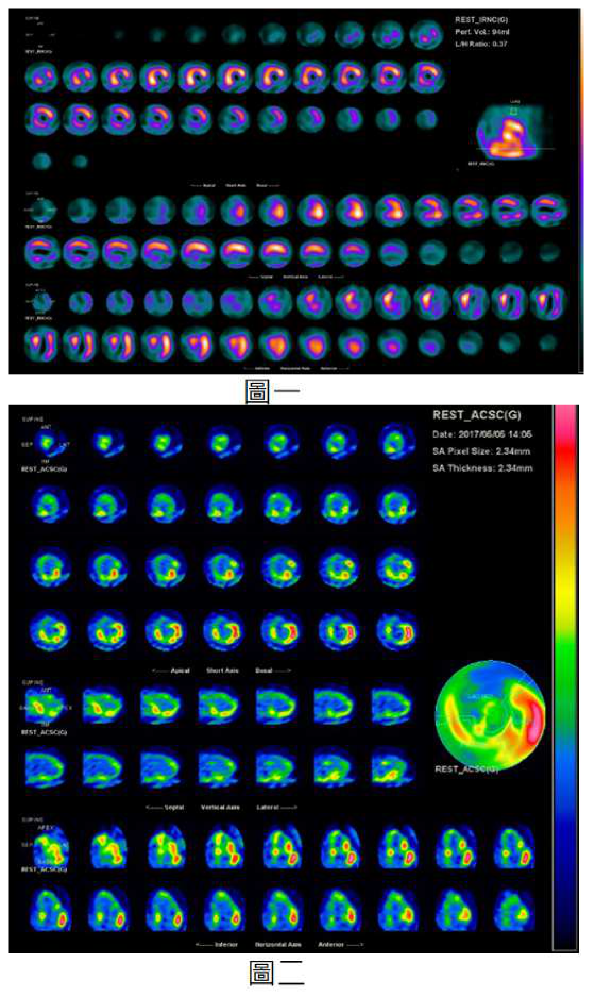
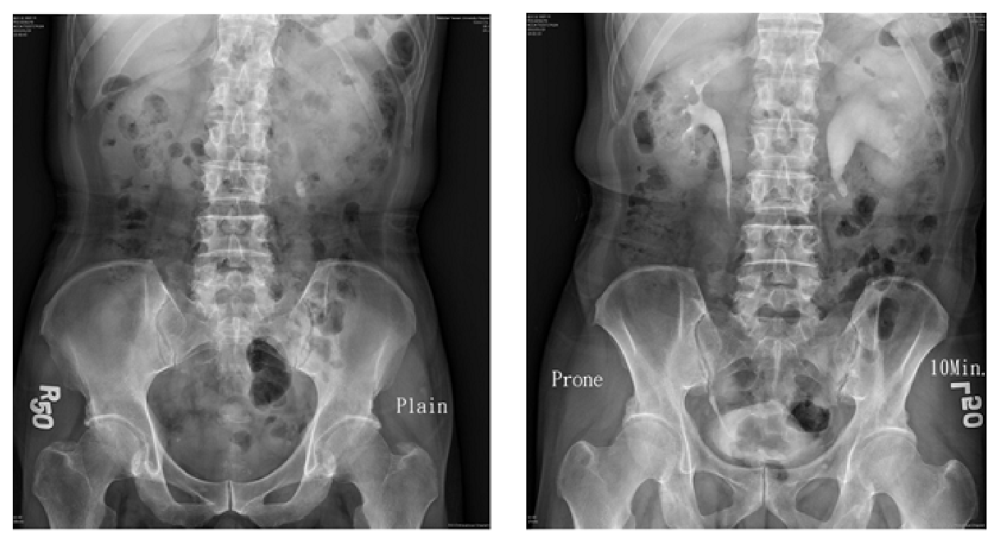
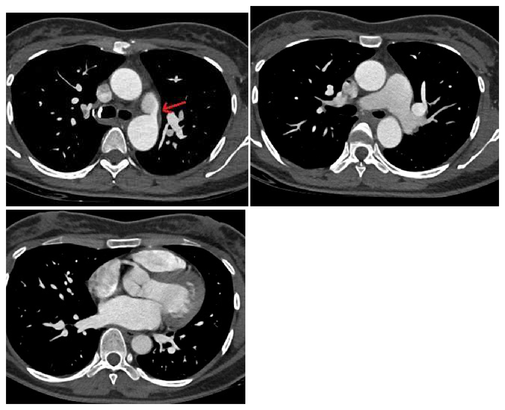

開卷有益 ／
醫師 ／ 醫學（三）（包括內科、家庭醫學科等科目及其相關臨床實例與醫學倫理） ／ 111 年第 2 次111 年第 2 次醫師醫學（三）（包括內科、家庭醫學科等科目及其相關臨床實例與醫學倫理）試題與答案
這一頁是民國 111 年第 2 次醫師醫學（三）（包括內科、家庭醫學科等科目及其相關臨床實例與醫學倫理）的整份歷屆試題，共 80 題，題目與標準答案出自考選部「國家考試試題及測驗式試題答案」開放資料，其中 80 題附有詳解。以下逐題列出題幹、選項與答案；要計時作答或記錄成績，請用線上練習。
考選部原始場次代碼：111080
線上作答這一科 →
全部 80 題
第 1 題
病人主訴頻尿，每次尿量都很多，並未使用利尿劑。收集 24 小時尿液檢查結果：總尿量 3500 mL/day，urineosmolality 450 mosmol/L。病人的檢查數值，最符合下列那一種多尿症的診斷？
（A） 溶質性利尿（solute diuresis）（B） 原發性多飲症（primary polydipsia）（C） 中樞性尿崩症（central diabetes insipidus）（D） 腎源性尿崩症（nephrogenic diabetes insipidus）答案：（A）
詳解與考點 正解：多尿合併尿液滲透壓 450 mosmol/L。24 小時尿量 3500 mL/day 已屬多尿，而尿液並未極度稀釋，代表腎臟仍在排出相當多溶質；這符合溶質性利尿。尿液每日溶質量約為 3.5 L/day×450 mosmol/L=1575 mosmol/day，支持溶質負荷增加，故選 A。
B：原發性多飲症因攝入大量水，尿液通常很稀、滲透壓低；450 mosmol/L 不符合典型水利尿，故錯。
C：中樞性尿崩症因 ADH 缺乏而無法濃縮尿液，常見大量低滲尿，與本題較高的尿液滲透壓不符。
D：腎源性尿崩症是腎臟對 ADH 反應不良，同樣以大量低滲尿為特徵，故不符。
本題考點：多尿（polyuria）鑑別；溶質性利尿（solute diuresis）可由尿液滲透壓及每日溶質排泄量辨識；尿崩症（diabetes insipidus）與原發性多飲症通常呈低滲尿。
第 2 題
關於懷孕期間慢性高血壓的治療建議，下列何者最不適當？
（A） 首選藥物為血管收縮素轉化酶抑制劑（angiotensin-converting enzyme inhibitor）或血管收縮素受體阻斷劑（angiotensin receptor blocker）（B） 可以使用 labetalol 或 nifedipine 控制血壓（C） 尚無足夠證據證實輕微高血壓的治療能改善懷孕預後（D） 收縮壓目標控制在 130～150 mmHg，而舒張壓目標控制在 80～100 mmHg答案：（A）
詳解與考點 正解：官方答案為 A。ACEI 與 ARB 會影響胎兒腎臟發育及羊水量，懷孕期間應避免使用；因此把兩者列為首選最不適當。惟本題有年代性爭議：現行證據支持以 140/90 mmHg 為門檻治療慢性高血壓可改善妊娠不良預後，故（C）也不宜作為現行定論。
B：labetalol 或 nifedipine 是懷孕期間常用的降血壓藥物選項，敘述適當。
C：「尚無足夠證據」反映較舊的命題觀念；現行證據支持以 140/90 mmHg 為門檻治療可改善妊娠不良預後，且未顯示增加胎兒小於妊娠年齡風險。因此本題雖以（A）為官方單選答案，（C）亦有時效性問題。
D：血壓控制須兼顧避免嚴重高血壓與維持子宮胎盤灌流。130～150 mmHg/80～100 mmHg 是本題採用的歷史性範圍，不能視為通用現行目標；實際目標須依準則與母胎狀況個別化。
本題考點：妊娠高血壓（hypertension in pregnancy）；ACEI/ARB 胎兒毒性（fetotoxicity）；labetalol 與 nifedipine 為常用妊娠降壓選項。
第 3 題
在評估胸痛病患時，下列那一個病史與急性主動脈症候群（acute aortic syndrome）之相關性最低？
（A） Ehlers-Danlos syndrome（B） pregnancy（C） bicuspid aortic valve（D） sick sinus syndrome答案：（D）
詳解與考點 正解：急性主動脈症候群的危險因子。結締組織疾病、懷孕及二尖瓣主動脈瓣都與主動脈擴張、剝離或相關結構異常有關；sick sinus syndrome 是心臟傳導系統疾病，與急性主動脈症候群的直接相關性最低，故選 D。
A：Ehlers-Danlos syndrome，尤其血管型，可造成血管壁脆弱，是主動脈剝離的重要危險線索，故非答案。
B：懷孕期的血流動力與血管壁變化可增加特定高危族群的主動脈事件風險，故相關性不低。
C：bicuspid aortic valve 常與主動脈根部或升主動脈病變相關，胸痛評估時須想到主動脈症候群，故非答案。
本題考點：急性主動脈症候群（acute aortic syndrome）；結締組織疾病（connective tissue disorder）；二尖瓣主動脈瓣（bicuspid aortic valve）與主動脈病變風險。
第 4 題
下列身體診察徵象與疾病的組合，何者的相關性最低？
（A） Chvostek's sign；低鈣血症（B） Duroziez's sign；主動脈瓣閉鎖不全（C） Kussmaul's sign；代謝酸中毒（D） Romberg's sign；感覺性共濟失調（sensory ataxia）答案：（C）
詳解與考點 正解：徵象與疾病的正確對應。Kussmaul's sign 是吸氣時頸靜脈壓反常上升，提示右心充盈受限，如縮窄性心包膜炎或限制型心肌病；代謝酸中毒的深大呼吸是 Kussmaul respiration，兩者名稱相近但不是同一徵象。因此 C 相關性最低。
A：Chvostek's sign 為敲擊顏面神經引起臉部肌肉抽動，可見於低鈣血症，配對正確。
B：Duroziez's sign 是在股動脈聽到來回雜音，與嚴重主動脈瓣閉鎖不全相關，配對正確。
D：Romberg's sign 陽性反映閉眼後姿勢明顯不穩，支持本體覺受損造成的感覺性共濟失調，配對正確。
本題考點：Kussmaul's sign 與 Kussmaul respiration 的鑑別；頸靜脈壓（jugular venous pressure）評估；神經與心血管理學檢查（physical examination）。
第 5 題
下列關於轉移痛（referred pain）之敘述，何者錯誤？
（A） 胸腔或心臟疾病可以有上腹部轉移痛（B） 胸椎神經病變可以有下腹部轉移痛（C） 膽道發炎的疼痛常會轉移到鎖骨上或肩胛骨下的區域（D） 當原發處之疼痛不明顯時，可利用按壓轉移痛的區域來誘發疼痛答案：（D）
詳解與考點 正解：轉移痛的機制。轉移痛源於不同部位的傳入神經在脊髓節段會聚，大腦將內臟痛誤定位到體表；按壓轉移痛區域並不能作為可靠方法去誘發原發處疼痛。因此 D 錯誤。
A：心臟或下胸腔病變可因共同神經節段而表現為上腹痛，是臨床常見的轉移痛型態，敘述正確。
B：胸椎神經根病變可沿相應皮節造成腹壁或下腹部疼痛，敘述正確。
C：膽囊與膽道發炎可轉移至右肩、肩胛區或鎖骨上區域，與膈神經及相關節段有關，敘述正確。
本題考點：轉移痛（referred pain）；會聚－投射理論（convergence-projection theory）；內臟傳入神經（visceral afferent nerve）與皮節（dermatome）定位。
第 6 題
下列有關冠狀動脈心臟病的非侵入式檢查敘述，何者錯誤？
（A） 靜態標準十二導程心電圖之 ST 段或 T 波異常，並不能確診是冠狀動脈心臟病（B） 運動心電圖是最廣泛使用的檢查評估工具，但因運動檢查有千分之一的死亡風險，故檢查場所必須備有急救器材（C） 合併藥物催迫（pharmacological stress）之核醫心肌灌注造影可用以檢出心肌缺血（ischemia）及心肌梗塞後之疤痕（scar）（D） 電腦斷層（multi-detector CT）測得之鈣化分數（calcium score）可準確診斷冠狀動脈心臟病，但對疾病預後之應用尚不明確本題送分，無標準答案
詳解與考點 本題官方公告送分。
第 7 題
下列何種狀況運動心電圖出現 ST-segment depression 時，冠狀動脈心臟病可能性最高？
（A） 58 歲男性，早發性冠狀動脈心臟病家族史，靜態心電圖為竇性脈及左束支傳導阻滯（LBBB）（B） 45 歲女性，糖尿病及高血壓，靜態心電圖有左心室肥厚（LVH）（C） 76 歲女性，近期運動出現氣促，長期抽菸，靜態心電圖無特殊異常（D） 65 歲男性出現運動後氣促，長期使用乙型交感神經阻斷劑（beta blocker），毛地黃（digoxin）及硝酸鹽（nitrate）類藥物答案：（C）
詳解與考點 正解：運動心電圖的 ST-segment depression 是否可被既有心電圖異常或藥物干擾。 （C）76 歲、吸菸且有運動誘發氣促，具有較高冠狀動脈心臟病事前機率，靜態心電圖又無影響 ST 段判讀的異常；因此若運動時出現 ST 段下降，最能支持心肌缺血，故選 C。
A：左束支傳導阻滯（left bundle branch block, LBBB）本身造成次發性 ST-T 變化，運動心電圖的 ST 段判讀不可靠。雖有家族史這項風險，但檢查陽性的特異性不足。
B：糖尿病與高血壓確實增加冠心病風險，看似合理；然而左心室肥厚（left ventricular hypertrophy, LVH）可伴隨再極化異常與 ST-T 改變，使運動心電圖較容易出現假陽性，故不如（C）具診斷價值。
D：beta blocker 會限制心率上升，digoxin 亦可造成 ST 段下移，兩者都會降低運動心電圖的可判讀性；硝酸鹽還可能減少運動誘發缺血，故即使有症狀也不是最可靠的情境。
本題考點：運動心電圖（exercise electrocardiography）的診斷效能取決於事前機率與基準心電圖是否可判讀；左束支傳導阻滯（LBBB）、左心室肥厚伴 ST-T 異常及 digoxin 效應都會干擾 ST-segment depression 的判讀。
第 8 題
下列關於壓力催迫性（stress）核醫心肌灌流造影（stressSPECT）與冠狀動脈心臟病的敘述，何者錯誤？
（A） 電腦斷層高鈣化指數者建議安排運動心電圖或壓力催迫性核醫心肌灌流檢查，依據心肌缺血嚴重度決定是否需要血管再通術（B） 非心臟外科手術術前風險評估除了考慮心肌缺氧嚴重度及範圍、左心室功能之外，還要考量手術種類及麻醉方式（C） 若前一次的壓力催迫性核醫心肌造影正常，受試者一年內出現急性心肌梗塞或是死亡的年度風險低於 1%。如無特殊狀況，兩年內不需要再追蹤；年長或是糖尿病等高風險族群，可以一年後再複查。完全不需要用藥治療（D） 壓力催迫性核醫心肌造影完全正常，並不能完全斷言絕對不會發生急性心肌梗塞；因為有時候血管狹窄雖然不嚴重，仍可能發生急性的動脈硬化斑塊破裂，導致血栓形成答案：（C）
詳解與考點 正解：壓力心肌灌流造影正常所代表的低風險，不能被解讀成不必做任何心血管治療。正常檢查可降低短期缺血性事件機率，卻不能消除既有危險因子或動脈粥樣硬化風險；（C）以「完全不需要用藥治療」作結論過度延伸，故為錯誤敘述。追蹤間隔與預防用藥也須依症狀、危險因子及當前指引個別決定。
A：冠狀動脈鈣化指數高代表動脈粥樣硬化負荷增加；若需評估是否有可誘發的心肌缺血，可使用運動心電圖或壓力灌流造影，再結合缺血範圍評估後續處置，方向合理。
B：非心臟手術的術前心臟風險不是只看灌流缺損，還必須整合左心室功能、手術本身的風險與麻醉相關負荷，敘述正確。
D：壓力灌流造影正常主要表示檢查當下沒有顯著可誘發的灌流缺損；輕度狹窄斑塊仍可能破裂形成血栓，因此不能保證永不發生急性心肌梗塞，敘述正確。
本題考點：壓力心肌灌流造影（stress myocardial perfusion SPECT）正常可提供低短期風險的預後資訊；動脈粥樣硬化（atherosclerosis）的斑塊破裂可發生於未造成顯著缺血的病灶；心血管預防治療須以整體風險評估決定。
第 9 題
59 歲男性，過去有冠狀動脈疾病開過繞道手術，最近 6 個月運動時胸悶加劇、喘，就診時發現心電圖有新的變化，因此心臟科醫師安排了靜態核醫心肌灌流單光子造影（MPI-SPECT）（圖一）及 F-18 FDG 正子掃描（PET）（圖二），下列敘述何者錯誤？

（A） 在左心室側壁的心肌灌流缺損多為休眠的心肌，可以考慮積極進行血管再通治療（B） 左心室前壁大部分是瘢痕心肌，血管再通治療效果不佳（C） 左心室下壁混和有瘢痕與休眠心肌，血管再通治療效果可能較全為存活心肌處略差（D） 左心室心尖混和有瘢痕與休眠心肌，血管再通治療效果可能較全為存活心肌處略差答案：（B）
詳解與考點 正解：官方答案為 B。官方答案為 B；本附圖解析度有限，難以逐區精確核對前壁在圖一與圖二之間的灌流與 F-18 FDG 攝取關係，惟依灌流缺損合併 FDG 攝取相對保留即代表灌流－代謝不匹配（perfusion-metabolism mismatch）、屬休眠但具存活性心肌之一般判讀原則，血管再通後仍可能改善功能，故（B）敘述錯誤。
A：圖一左心室側壁可見灌流缺損，而圖二相對保留 FDG 攝取，符合休眠心肌（hibernating myocardium）的灌流－代謝不匹配型態。這類仍有存活性的缺血心肌可考慮血管再通治療，故非錯誤敘述。
C：圖中左心室下壁的灌流與 FDG 攝取並非一致地完全保留或完全消失，表示混有代謝消失的瘢痕心肌與仍有 FDG 攝取的休眠心肌。混合型存活度病灶接受血管再通後的改善幅度通常不如完全存活心肌區，故敘述正確。
D：圖中左心室心尖亦呈現部分區域灌流及 FDG 攝取皆下降、部分區域仍保有 FDG 攝取的混合表現，符合瘢痕與休眠心肌共存。因可恢復的心肌比例較非全然存活的區域低，血管再通效果可能較差，故非錯誤敘述。
本題考點：心肌存活度評估（myocardial viability assessment）——灌流缺損但 FDG 攝取保留的灌流－代謝不匹配，表示休眠心肌（hibernating myocardium）且可能受益於血管再通；灌流與 FDG 攝取皆缺損，則較支持不可逆瘢痕心肌（scar myocardium）。
第 10 題
一位年輕男性因心悸胸悶至急診，心電圖顯示 regular narrow QRS tachycardia。下列何者是最不可能的診斷？
（A） orthodromic atrioventricular reentrant tachycardia（AVRT）（B） atrioventricular nodal reentry tachycardia（AVNRT）（C） atrial tachycardia（D） ventricular tachycardia答案：（D）
詳解與考點 正解：「regular narrow QRS tachycardia」。窄 QRS 通常表示心室經由正常 His-Purkinje 系統活化，因此最常見來源在心房或房室交界；（D）ventricular tachycardia 起源於心室，典型表現是寬 QRS 心搏過速，故最不可能。極少數心室頻脈可因特殊傳導而呈窄 QRS，但不是本題典型情境。
A：orthodromic atrioventricular reentrant tachycardia（AVRT）以下傳的房室結與 His-Purkinje 系統活化心室，故可呈規則窄 QRS 心搏過速。
B：atrioventricular nodal reentry tachycardia（AVNRT）是最常見的陣發性上心室頻脈之一，迴旋路徑位於房室結附近，通常呈規則窄 QRS。
C：atrial tachycardia 起源於心房，若房室傳導正常，心室仍經正常傳導系統活化，因此也可呈規則窄 QRS。
本題考點：規則窄 QRS 心搏過速（regular narrow QRS tachycardia）主要鑑別為 AVNRT、orthodromic AVRT 與 atrial tachycardia；心室頻脈（ventricular tachycardia）原則上先以寬 QRS 心搏過速思考。
第 11 題
一位 65 歲女性因胸悶至門診，十二導程心電圖發現有心房顫動。為了評估之後缺血性中風風險，可以使用CHA2DS2-VASc score。 下列何者不是CHA2DS2-VASc score 之計分項目？
（A） 心衰竭（B） 冠狀動脈心臟病（C） 年紀大於等於 65 歲（D） 深部靜脈血栓答案：（D）
詳解與考點 正解：CHA2DS2-VASc score 用於心房顫動缺血性中風風險評估，其項目包括心衰竭、高血壓、年齡、糖尿病、既往中風或短暫性腦缺血、血管疾病及女性性別。深部靜脈血栓（deep vein thrombosis）是靜脈血栓事件，不是此分數的計分項目，故選 D。
A：心衰竭（congestive heart failure）是 CHA2DS2-VASc 的 C 項，屬計分項目。
B：冠狀動脈心臟病屬血管疾病（vascular disease）的範圍，可納入 V 項，故不是答案。
C：年齡大於等於 65 歲是年齡項目的一部分；65–74 歲與更高年齡層的配分不同，但都與分數有關。
本題考點：CHA2DS2-VASc score 用於非瓣膜性心房顫動（atrial fibrillation）的中風風險分層；血管疾病（vascular disease）包括冠狀動脈疾病，但深部靜脈血栓（DVT）不屬此分數。
第 12 題
關於身體診察的異常發現，下列敘述何者錯誤？
（A） 姿態性低血壓的定義為從平躺到起立的 3 分鐘內收縮壓下降超過 20 mmHg，或舒張壓下降超過 10 mmHg（B） 身體診察時看到右上胸骨旁有脈動（pulsation），可懷疑升主動脈瘤（C） 脈搏每跳之間有差異，稱為奇脈（pulsus paradoxus），常出現在嚴重的左心室收縮功能不全的病人（D） 雙峰脈波（bifid pulse）可以出現在肥厚型阻塞性心肌症（hypertrophic obstructive cardiomyopathy）的病人答案：（C）
詳解與考點 正解：奇脈（pulsus paradoxus）的定義與典型病因。奇脈不是「每跳之間有差異」，而是吸氣時收縮壓異常下降的現象，典型見於心包填塞、嚴重氣喘或 COPD 急性惡化；（C）將其定義與常見情境都說錯，故選 C。
A：姿態性低血壓（orthostatic hypotension）可用起立後 3 分鐘內收縮壓下降至少 20 mmHg，或舒張壓下降至少 10 mmHg 來定義，敘述正確。
B：右上胸骨旁可觸或可見異常脈動時，應考慮升主動脈擴張或升主動脈瘤（ascending aortic aneurysm），敘述合理。
D：雙峰脈波（bifid pulse）可出現在肥厚型阻塞性心肌症（hypertrophic obstructive cardiomyopathy），反映左心室流出道阻塞造成的射血波形改變，敘述正確。
本題考點：奇脈（pulsus paradoxus）是吸氣時收縮壓明顯下降，而非單純脈搏不規則；姿態性低血壓（orthostatic hypotension）以站立後血壓下降界定；雙峰脈波（bifid pulse）可見於肥厚型阻塞性心肌症。
第 13 題
適當的使用下列藥物被認為對治療 heart failure with reduced ejection fraction 可以改善症狀和預後，但何者除外？
（A） angiotensin converting enzyme inhibitor（B） mineralocorticoid receptor antagonist（C） second-generation calcium channel blocker（D） angiotensin receptor neprilysin inhibitor答案：（C）
詳解與考點 正解：HFrEF 中「改善症狀和預後」的疾病修飾治療。ACE inhibitor、mineralocorticoid receptor antagonist 與 ARNI 都可改善適當 HFrEF 患者的預後；（C）second-generation calcium channel blocker 並非能降低死亡或住院風險的標準疾病修飾治療，故選 C。部分鈣離子通道阻斷劑可因其他適應症使用，但不能因此視為 HFrEF 預後治療。
A：angiotensin converting enzyme inhibitor 可抑制腎素－血管張力素系統，適當使用於 HFrEF 可改善症狀與預後。
B：mineralocorticoid receptor antagonist 可減少醛固酮相關的水鈉滯留與心肌重塑，在適當病人可改善預後。
D：angiotensin receptor neprilysin inhibitor（ARNI）結合腎素－血管張力素系統抑制與 neprilysin 抑制，是 HFrEF 的疾病修飾治療之一。
本題考點：射出分率降低心衰竭（heart failure with reduced ejection fraction, HFrEF）的疾病修飾治療包括 ACE inhibitor、mineralocorticoid receptor antagonist 與 ARNI；鈣離子通道阻斷劑（calcium channel blocker）不是用來改善 HFrEF 預後的核心治療。
第 14 題
有關心臟衰竭（heart failure, HF）相關猝死（sudden death）預防描述，何者錯誤？
（A） 在大約一半的心衰竭患者中，是由於心室性心律不整（ventricular arrhythmia）所引起的猝死，HFrEF 患者中尤為普遍（B） 在猝死發作後倖存的心衰竭患者被認為具有很高再猝死的風險，應考慮植入式心臟內去顫器（implantablecardioverter-defibrillator, ICD）（C） 無論心衰竭的病因為何，凡具有心衰竭的 NYHA 第 I 級症狀，但 LVEF 大於 35%的患者，是考慮植入式心臟內去顫器（implantable cardioverter-defibrillator, ICD）預防性治療的合適候選人（D） 對於心肌梗塞發生之後已經 3 個月，LVEF≦30%且仍有心室頻脈，即使已使用最佳藥物治療的患者，也建議植入式心臟內去顫器（implantable cardioverter-defibrillator, ICD）答案：（C）
詳解與考點 正解：植入式心臟內去顫器（implantable cardioverter-defibrillator, ICD）的預防性植入須有明確高風險條件，不能只因有任何心衰竭就植入。 （C）NYHA 第 I 級且 LVEF 大於 35%並不符合一般以顯著左心室收縮功能不全為核心的初級預防條件，故為錯誤敘述。ICD 適應症須同時考量病因、心功能、治療後狀態與預期存活，細節會隨指引更新。
A：心衰竭患者的猝死常與心室性心律不整（ventricular arrhythmia）相關，尤其在 HFrEF 是重要死因之一，敘述方向正確。
B：心衰竭患者若曾發生並存活於心律不整相關猝死，屬再發風險很高的族群；排除可逆原因後，ICD 是應考慮的次級預防策略。
D：心肌梗塞後持續嚴重左心室功能不全且有心室頻脈者，若經適當藥物治療後風險仍高，通常屬應評估 ICD 的情境，敘述方向正確。
本題考點：植入式心臟內去顫器（ICD）用於心因性猝死（sudden cardiac death）的次級或選定高風險初級預防；左心室射出分率（LVEF）與心衰竭症狀是評估核心；ICD 適應症具有指引時效性。
第 15 題
68 歲李女士，30 年前因輸血感染 C 型肝炎，目前 AST：100 U/L，ALT：126 U/L，HCV genotype 1，腹部超音波下無肝硬化，下列敘述何者錯誤？
（A） 李女士應定期接受肝癌篩檢，包括腹部超音波與胎兒蛋白（B） 李女士應該接受抗病毒藥物治療（C） 目前 C 型肝炎治療主要為「長效干擾素（pegylated interferon）」合併「雷巴威林（ribavirin）」（D） 若能清除 C 型肝炎病毒，可以減少肝硬化、肝癌之風險答案：（C）
詳解與考點 正解：慢性 C 型肝炎目前的病因治療已以直接抗病毒藥物（direct-acting antivirals, DAA）為主，而非長效干擾素合併 ribavirin。故（C）所稱「目前主要」治療為 pegylated interferon 加 ribavirin 錯誤，故選 C。無肝硬化者是否需肝癌監測，須依纖維化程度及現行風險分層判定，不能只由本題所給「無肝硬化」直接一概推論。
A：腹部超音波合併腫瘤標記可用於肝細胞癌監測；但慢性 C 型肝炎未肝硬化患者是否需規律監測，取決於個別肝纖維化與風險評估，這是本選項容易被忽略的適用族群限制。
B：慢性 HCV 感染合併肝功能異常，原則上應評估並給予抗病毒治療，以清除病毒並降低長期肝臟併發症風險，敘述正確。
D：達到持續病毒學反應（sustained virologic response）可降低肝硬化及肝細胞癌風險，雖非使所有風險歸零，敘述正確。
本題考點：C 型肝炎（hepatitis C）的現代治療以直接抗病毒藥物（DAA）為主；持續病毒學反應（SVR）可降低肝硬化與肝細胞癌風險；肝細胞癌監測（hepatocellular carcinoma surveillance）須依肝纖維化與個別風險決定。
第 16 題
肝臟切片對評估肝損傷的嚴重程度和級別藉以推測其預後相當重要。在現今肝炎組織學的評分系統中最常用為肝炎組織學活動指數（histologic activity index）。下列何者組織切片發現不屬於其評分系統？
（A） 門脈周邊壞死（periportal necrosis）（B） 漿細胞浸潤（plasma cell infiltration）（C） 肝小葉區壞死（intralobular necrosis）（D） 門脈發炎（portal inflammation）答案：（B）
詳解與考點 正解：肝炎組織學活動指數（histologic activity index, HAI）評估的是肝炎的壞死與發炎活動度。其組成涵蓋門脈周邊壞死、肝小葉壞死或變性，以及門脈發炎；（B）漿細胞浸潤是某些病因如自體免疫性肝炎的重要形態線索，卻不是 HAI 的獨立評分項目，故選 B。
A：門脈周邊壞死（periportal necrosis）反映界面性肝炎活動，是 HAI 所評估的壞死發炎成分。
C：肝小葉區壞死（intralobular necrosis）屬肝小葉內的壞死性活動，為 HAI 評估的成分之一。
D：門脈發炎（portal inflammation）是 HAI 的評分面向之一，反映門脈區發炎程度。
本題考點：肝炎組織學活動指數（histologic activity index, HAI）評估門脈周邊壞死、肝小葉壞死與門脈發炎等活動度；漿細胞浸潤（plasma cell infiltration）是病因鑑別線索，非 HAI 獨立項目。
第 17 題
20 歲的林小姐最近三個月早晨上班前，發生間斷性下腹部絞痛，其排便次數變多，且糞便形態從正常轉成常便秘，但有時又會腹瀉。她感覺排便完腹部絞痛就會減輕。關於她的症狀，下列敘述何者錯誤？
（A） 此疾病各個年齡層都可能發作，女性較男性為多（B） 糞便的 calprotectin 為其診斷性生物標記（C） 此疾病常伴有脹氣、消化不良、噁心、嘔吐感等症狀（D） 病理機轉目前仍不清楚，可能與腸道蠕動異常、腸道過度敏感、病患的心理因素、腸道菌叢改變或腸道感染有關答案：（B）
詳解與考點 正解：反覆腹痛與排便相關、排便後緩解且糞便型態改變，最符合腸躁症（irritable bowel syndrome, IBS）。糞便 calprotectin 反映腸道發炎，主要用於協助排除發炎性腸病，而不是 IBS 的診斷性生物標記；故（B）錯誤。
A：腸躁症可見於不同年齡層，且女性較常見，敘述正確。
C：腸躁症常有腹脹等腸胃症狀，也可合併消化不良、噁心感等腸外或上消化道不適，敘述正確。
D：腸躁症的機轉屬多因素，與腸道蠕動、內臟過度敏感、腦腸互動、菌相及感染後改變都有關，敘述正確。
本題考點：腸躁症（IBS）以腹痛與排便或糞便型態改變的關聯為特徵；糞便 calprotectin 是腸道發炎（intestinal inflammation）的輔助指標，適合用來鑑別發炎性腸病而非確診 IBS；腦腸互動（gut-brain interaction）參與其病理機轉。
第 18 題
關於大腸直腸癌的敘述何者正確？
（A） 起源於右側結腸的腫瘤預後比左側結腸的好（B） 肺部是大腸癌最容易轉移的內臟器官（C） 血清 carcinoembryonic antigen（CEA）是用來篩檢大腸癌的指標（D） 大多數大腸癌的切除後復發會於四年內發生，因此五年存活可當作治癒的指標答案：（D）
詳解與考點 正解：大腸直腸癌根治切除後的復發時間分布。多數復發集中在術後數年內，因此臨床追蹤通常著重前 5 年；（D）以五年存活作為實務上治癒的重要指標，敘述正確，故選 D。
A：右側與左側結腸癌的預後受分期、分子特徵與治療等多項因素影響，不能概括說右側一定較左側好；右側腫瘤在某些情境反而預後較差。
B：大腸癌血行轉移最常見的內臟器官是肝臟，因門靜脈回流先經肝；肺亦常見但不是最容易轉移的內臟器官。
C：血清 carcinoembryonic antigen（CEA）缺乏足夠敏感度與特異性，不用於一般族群篩檢；它較常用於已診斷患者的治療反應與復發追蹤，這正是容易混淆的誘答點。
本題考點：大腸直腸癌（colorectal cancer）的血行轉移常先至肝臟；CEA 適用於治療後追蹤而非族群篩檢；根治切除後的復發監測（surveillance）著重術後前 5 年。
第 19 題
下列有關胃腺癌的敘述何者錯誤？
（A） 胃腺癌病理下可分成兩種類型：腸道型及瀰漫型（B） 瀰漫型胃腺癌好發族群較年輕，其腫瘤之黏附能力消失，且容易造成胃壁之浸潤和增厚，稱為皮革胃（linitisplastica）（C） 腸道型胃腺癌常以潰瘍來表現，可能和胃幽門螺旋桿菌感染相關（D） 帶有 signet ring cell 的瀰漫型胃腺癌若轉移至子宮，稱為 Krukenberg's tumor答案：（D）
詳解與考點 正解：Krukenberg tumor 的定義。含 signet ring cell 的胃癌轉移至卵巢時才稱 Krukenberg tumor；（D）誤寫成轉移至子宮，故為錯誤敘述。
A：胃腺癌常依 Lauren 分類分為腸道型（intestinal type）與瀰漫型（diffuse type），敘述正確。
B：瀰漫型胃腺癌較常見於較年輕患者，細胞黏附異常使腫瘤瀰漫浸潤胃壁並增厚，可形成皮革胃（linitis plastica），敘述正確。
C：腸道型胃腺癌可呈潰瘍性病灶，且與 Helicobacter pylori 感染及慢性胃炎的關聯較強，敘述正確。
本題考點：胃腺癌（gastric adenocarcinoma）的 Lauren 分類包括腸道型與瀰漫型；皮革胃（linitis plastica）是瀰漫浸潤的表現；Krukenberg tumor 指胃癌等腺癌轉移至卵巢。
第 20 題
若因腫瘤而切除十二指腸段，下列何者之吸收過程較不會受到影響？
（A） 鈣（B） 維他命 B12（C） 葉酸（D） 鐵答案：（B）
詳解與考點 正解：各營養素的特定腸段吸收位置。維他命 B12 與內在因子（intrinsic factor）形成複合體後，主要在終末迴腸吸收，不依賴十二指腸，因此切除十二指腸較不影響（B）的吸收，故選 B。
A：鈣的主動吸收以近端小腸、尤其十二指腸為重要部位，切除十二指腸可能影響吸收。
C：葉酸主要在近端小腸吸收，十二指腸切除可減少其早期吸收面積，故不是最不受影響者。
D：鐵主要在十二指腸與近端空腸吸收；十二指腸切除會明顯影響鐵吸收，與（B）相反。
本題考點：維他命 B12（vitamin B12）－內在因子複合體在終末迴腸（terminal ileum）吸收；鈣（calcium）與鐵（iron）以十二指腸及近端小腸吸收為主；腸段切除會造成特定營養素缺乏。
第 21 題
下列何者不是胰腺癌（pancreatic adenocarcinoma）的常見症狀？
（A） 體重減輕（B） 黃疸（jaundice）（C） 背痛（D） 低血糖答案：（D）
詳解與考點 正解：胰腺腺癌的常見臨床表現來自癌症消耗、膽道阻塞及局部神經侵犯。體重減輕、黃疸與背痛都常見；（D）低血糖不是胰腺腺癌的典型症狀，故選 D。低血糖較會使人想到分泌胰島素的胰腺神經內分泌腫瘤，而不是胰腺腺癌。
A：體重減輕常見於胰腺腺癌，可由食慾下降、癌症消耗與胰外分泌不足共同造成。
B：胰頭腫瘤壓迫總膽管可造成無痛性黃疸（jaundice），是重要警訊。
C：腫瘤侵犯後腹膜或腹腔神經叢時可出現背痛，尤其在進展期並不少見。
本題考點：胰腺腺癌（pancreatic adenocarcinoma）常見體重減輕、阻塞性黃疸與背痛；低血糖（hypoglycemia）較提示胰島素分泌相關的胰腺神經內分泌腫瘤（pancreatic neuroendocrine tumor）。
第 22 題
下列何種情況不是肝細胞癌（hepatocellular carcinoma）的高危險群？
（A） B 型肝炎帶原者（B） 慢性 C 型肝炎（C） 肝鈣化點（calcified spot of liver）（D） 酒精性肝硬化答案：（C）
詳解與考點 正解：肝細胞癌（hepatocellular carcinoma, HCC）的主要高危險背景為慢性肝炎與肝硬化。 （C）肝鈣化點只是影像所見，可能代表舊病灶或其他良性變化，本身不構成 HCC 的典型高危險群，故選 C。
A：B 型肝炎帶原者具有 HCC 風險，即使尚未發展肝硬化也可能發生，敘述正確。
B：慢性 C 型肝炎經長期發炎與纖維化可增加 HCC 風險，尤其進展至肝硬化時風險更高。
D：酒精性肝硬化是肝硬化背景之一，會顯著增加 HCC 風險，敘述正確。
本題考點：肝細胞癌（HCC）的高危險因子包括慢性 B 型肝炎、慢性 C 型肝炎及肝硬化（cirrhosis）；單獨肝鈣化（hepatic calcification）不是標準風險分層因子。
第 23 題
下列何種情況不適合做肝臟移植？
（A） 失代償性（decompensated）肝硬化（B） 在 UCSF criteria 以內的肝細胞癌（C） 第四期原發性膽管性肝硬化（primary biliary cirrhosis 或稱 primary biliary cholangitis）（D） 活動性精神病（active psychosis）答案：（D）
詳解與考點 正解：肝臟移植需要受者能配合長期免疫抑制、追蹤與照護。活動性精神病（active psychosis）若未妥善控制，可能嚴重影響治療同意、服藥遵從與術後照護，因此在未妥善控制前不宜直接接受移植或列入候選；應先完成精神科與社會心理評估及治療，穩定後仍可重新個別評估，故選 D。
A：失代償性肝硬化（decompensated cirrhosis）是肝臟移植的典型適應症之一。
B：在 UCSF criteria 以內的肝細胞癌，屬可考慮肝臟移植的腫瘤範圍，並非不適合的情況。
C：第四期原發性膽管性肝硬化或原發性膽管炎（primary biliary cholangitis）若肝病進展，可為肝臟移植適應症。
本題考點：肝臟移植（liver transplantation）的適應症包括失代償性肝硬化與符合選擇標準的肝細胞癌；移植受者評估（transplant candidacy）須確認精神疾病已穩定並能維持長期治療遵從。
第 24 題
下列何種免疫抑制劑作用於 T 淋巴球活化過程中的 costimulatory pathway？
（A） tacrolimus（B） mycophenolate mofetil（C） sirolimus（D） belatacept答案：（D）
詳解與考點 正解：T 細胞完全活化除了 T-cell receptor 訊號外，還需要 CD28 與抗原呈現細胞 B7 的共刺激（costimulatory）訊號。belatacept 為 CTLA-4 融合蛋白，可結合 B7 並阻斷 CD28-B7 共刺激路徑，故選 D。
A：tacrolimus 為 calcineurin inhibitor，抑制 calcineurin 後降低 IL-2 轉錄，主要不是直接阻斷共刺激路徑。
B：mycophenolate mofetil 抑制 inosine monophosphate dehydrogenase，減少淋巴球嘌呤合成與增生，作用點不在 costimulation。
C：sirolimus 抑制 mTOR，使 IL-2 訊號後的 T 細胞增生受阻；它與（D）同樣影響 T 細胞反應，看似接近，但不是 CD28-B7 的共刺激阻斷。
本題考點：T 細胞活化（T-cell activation）需要抗原辨識與共刺激（costimulation）；belatacept 阻斷 CD28-B7 pathway；tacrolimus、mycophenolate mofetil 與 sirolimus 分別作用於 calcineurin、嘌呤合成與 mTOR。
第 25 題
下列何項不是馬兜鈴酸腎病變（aristolochic acid nephropathy）的臨床特徵？
（A） marked protein-energy malnutrition（B） rapid progression to renal failure（C） upper urinary tract urothelial cancer（D） disproportionate anemia答案：（A）
詳解與考點 正解：馬兜鈴酸腎病變（aristolochic acid nephropathy）以進行性間質纖維化與腎功能惡化為主，蛋白尿通常不是其突出表現。 （A）marked protein-energy malnutrition 並非其典型臨床特徵，故選 A。
B：馬兜鈴酸相關腎病可快速進展至腎衰竭（renal failure），是其重要特徵。
C：馬兜鈴酸暴露與上泌尿道尿路上皮癌（upper urinary tract urothelial cancer）風險增加有明確關聯，敘述正確。
D：因腎小管間質病變與腎功能惡化，患者可有與腎功能程度不相稱的貧血（disproportionate anemia），為典型線索之一。
本題考點：馬兜鈴酸腎病變（aristolochic acid nephropathy）屬腎小管間質腎病（tubulointerstitial nephropathy），可快速進展至腎衰竭；與上泌尿道尿路上皮癌相關；不相稱貧血是重要臨床線索。
第 26 題
一名 60 歲女性，3 小時前開始左腰疼痛並出現血尿，體溫 38.3℃，靜脈腎盂攝影檢查 10 分鐘前、後呈像如附圖左、右。下列何項治療處置應最優先考慮？

（A） 給與α1 腎上腺素受體阻斷劑（B） 照會泌尿科醫師尋求介入治療（C） 投與經驗性抗生素並追蹤培養結果（D） 開立止痛藥並鼓勵大量喝水答案：（B）
詳解與考點 正解：病人有急性左側腰痛、血尿及發燒，應高度懷疑輸尿管結石合併上泌尿道感染。靜脈腎盂攝影延遲影像可見左側腎盂腎盞顯影且擴張、左側輸尿管未見順利向下顯影，支持左側上泌尿道阻塞。感染合併阻塞的腎臟是泌尿科急症，單靠藥物可能無法引流受感染尿液，須優先照會泌尿科進行介入性減壓引流，如輸尿管支架或經皮腎造瘻，故選 B。
A：α1 腎上腺素受體阻斷劑可使輸尿管平滑肌鬆弛，有時用於促進特定輸尿管結石排出；但本例已有發燒與影像支持阻塞，不能以等待自行排石取代緊急引流。
C：經驗性抗生素應及早給予，並依尿液及血液培養結果調整；但在感染性阻塞時，抗生素無法取代引流，最優先處置仍是泌尿科介入解除阻塞。
D：止痛與補充水分可作為單純、無併發症腎絞痛的支持治療；本例有發燒及阻塞性腎盂擴張，若延誤減壓可能進展為敗血症，故不適合僅採保守處置。
本題考點：感染性阻塞性尿路結石（infected obstructing urolithiasis）是泌尿科急症；腎盂積水（hydronephrosis）合併發燒應先考慮引流減壓與抗生素治療；醫學排石治療（medical expulsive therapy）僅適用於穩定且無感染等併發症的個案。
第 27 題
一位 27 歲女性，長期在腎臟科門診追蹤 IgA nephropathy 與輕度蛋白尿。最近懷孕並出現高血壓，下列高血壓相關藥物處置，何者最不適合？
（A） 使用 methyldopa 控制血壓（B） 使用 long-acting calcium channel blockers（CCB）控制血壓（C） 使用 labetalol 控制血壓（D） 使用 angiotensin-converting-enzyme inhibitors（ACE inhibitors）藥物降低蛋白尿，預防發生 pre-eclampsia答案：（D）
詳解與考點 正解：已懷孕的高血壓患者。ACE inhibitors 雖可降低蛋白尿，但妊娠期間可能造成胎兒腎臟與羊水相關不良影響，應避免使用；（D）以 ACE inhibitors 降蛋白尿並預防 pre-eclampsia 最不適合，故選 D。
A：methyldopa 可用於妊娠高血壓的血壓控制，是可接受的選擇之一。
B：long-acting calcium channel blockers 可作為妊娠期間控制高血壓的藥物選擇之一，敘述適當。
C：labetalol 常用於妊娠高血壓控制；若無個別禁忌，可作為合適的選擇。
本題考點：妊娠高血壓（hypertension in pregnancy）可使用 methyldopa、labetalol 或適當的長效鈣離子通道阻斷劑；ACE inhibitors 在妊娠中應避免；蛋白尿（proteinuria）治療需同時考量母體與胎兒安全。
第 28 題
有關 focal segmental glomerulosclerosis（FSGS）的敘述，何者錯誤？
（A） FSGS 以血尿、高血壓、各種程度的蛋白尿及腎功能不全表現，如果出現腎功能不全、大量蛋白尿，有較高的風險會進入透析治療（B） 病理報告應包括在 corticomedullary junction 的腎絲球，如果切片的位置太淺，常會被誤判為 minimal changedisease（MCD）（C） 病理報告 collapsing type FSGS with segmental or global glomerular collapse 代表有比較好的預後（D） 治療續發性的 FSGS，不需使用類固醇，必須針對潛在的根本原因治療答案：（C）
詳解與考點 正解：collapsing type FSGS 的病理意義。此型可見腎絲球節段或全球性塌陷，通常代表侵襲性病程與較差腎臟預後；（C）說其預後較好正好相反，故選 C。
A：FSGS 可表現為蛋白尿、血尿、高血壓與腎功能不全；腎功能不全及大量蛋白尿提示較高進展至末期腎病的風險，敘述正確。
B：FSGS 病灶具有局灶性，較深的皮髓交界（corticomedullary junction）腎絲球較可能顯示病灶。切片過淺可能漏診而被誤認為 minimal change disease，敘述正確。
D：續發性 FSGS 的核心是處理血流動力學負荷、藥物或其他根本病因；通常不以免疫抑制類固醇作為常規治療，敘述正確。
本題考點：局部節段性腎絲球硬化症（focal segmental glomerulosclerosis, FSGS）有局灶病灶，切片需涵蓋適當深度；collapsing variant 與較差預後相關；續發性 FSGS 應治療根本原因而非例行使用類固醇。
第 29 題
下列那一段腎小管（renal tubule）可透過抗利尿荷爾蒙（antidiuretic hormone, ADH）的作用增加對水分的通透性？
（A） 近端腎小管（proximal tubule）（B） Henle 氏環下行枝（descending limb of Henle's loop）（C） 遠端腎小管（distal convoluted tubule）（D） 集尿管（collecting duct）本題送分，無標準答案
詳解與考點 本題官方公告送分。
第 30 題
一位 50 歲男性因懷疑腎結石接受 intravenous urography（IVU）檢查，第 3 天發現 BUN 由 30 mg/dL 升至 70mg/dL，血中 creatinine 由 1.5 mg/dL 升至 4.5 mg/dL。下列有關顯影劑與腎病變的敘述，何者正確？
（A） 顯影劑可經過 reactive oxygen species 之機轉，直接傷害腎絲球（B） 血中 creatinine 通常在 10～14 天達高峰，於 2～3 週後開始恢復（C） 顯影劑之種類、劑量與腎損傷之嚴重程度無關（D） 病人若有 multiple myeloma 或既有的腎臟疾病，較容易發生此併發症答案：（D）
詳解與考點 正解：IVU 後第 3 天 BUN 與 creatinine 明顯上升，符合顯影劑相關急性腎損傷（contrast-associated acute kidney injury）的典型時間型態。既有腎功能不全是重要危險因子。多發性骨髓瘤若合併腎功能不全、脫水或高鈣血症，也可能提高風險；但骨髓瘤本身未被證實為獨立危險因子。題目將兩者並列反映較舊的命題觀念，官方答案為 D。
A：顯影劑腎病變的核心病理包括腎血管收縮造成腎髓質缺血，以及氧化壓力與腎小管上皮細胞毒性；題目將傷害主要說成直接作用於腎絲球，部位與機轉均不夠正確。
B：血中 creatinine 通常在顯影劑暴露後數日內上升並接近高峰，而非 10～14 天才達高峰；此選項看似描述急性腎損傷後會恢復，但時間窗過度延後。
C：顯影劑的滲透壓特性、種類與使用量都會影響腎損傷風險，不能說與嚴重程度無關。
本題考點：顯影劑相關急性腎損傷（contrast-associated acute kidney injury）——常在暴露後數日內出現 creatinine 上升；危險因子包括既有慢性腎臟病與較高顯影劑暴露量；病理涉及腎髓質缺血與腎小管毒性。
第 31 題
關於 sarcoidosis 疾病的描述，下列何者最適當？
（A） 主要致病機轉為 B 細胞的活化和自體免疫抗體的產生，再經 antibody-dependent cell-mediated cytotoxicity 造成組織破壞（B） 大於 95%的病人會有皮膚的侵犯，而約有 43%病人會有肺部的侵犯（C） 典型的淋巴結病理切片檢查之特徵為出現 noncaseating granuloma（D） 大於 90%的病人會有 hypercalcemia 和／或 hypercalciuria，常會有腎臟腎絲球的侵犯而造成血中 angiotensin-converting enzyme 濃度的上升答案：（C）
詳解與考點 正解：sarcoidosis 的病理關鍵是肉芽腫性發炎；典型組織切片可見非乾酪性肉芽腫（noncaseating granuloma），故選 C。此病由細胞媒介免疫反應主導，肺與胸腔淋巴結是最常受累部位。
A：sarcoidosis 並非以 B 細胞產生自體抗體、再經 antibody-dependent cell-mediated cytotoxicity 為主要致病機轉；較重要的是 T 細胞與巨噬細胞驅動的肉芽腫反應。
B：此選項把器官受累比例顛倒。sarcoidosis 最常累及肺部，而不是超過 95% 病人皆有皮膚侵犯；皮膚病灶雖具提示性，並非其最普遍表現。
D：肉芽腫的巨噬細胞活化可使 angiotensin-converting enzyme 上升，且可能增加活性維生素 D 造成高鈣血症或高尿鈣；但這些並非超過 90% 病人都會出現，也不是以腎絲球侵犯為典型原因。
本題考點：結節病（sarcoidosis）——典型病理為非乾酪性肉芽腫（noncaseating granuloma）；以肺部受累常見；巨噬細胞活化可造成 angiotensin-converting enzyme 上升與鈣代謝異常。
第 32 題
一位 72 歲男性病人手部有 clubbing of fingers 的症狀，手部 X 光檢查發現有 hypertrophic osteoarthropathy，此病人的這些臨床特徵與下列何種疾病最有關係？
（A） diabetes mellitus（B） hemochromatosis（C） acromegaly（D） bronchogenic carcinoma答案：（D）
詳解與考點 正解：手指杵狀指（clubbing）合併肥大性骨關節病變（hypertrophic osteoarthropathy）是肺部惡性腫瘤的重要副腫瘤表現，尤其應聯想到支氣管原性癌（bronchogenic carcinoma），故選 D。
A：糖尿病可造成周邊神經病變與血管病變，但不是杵狀指合併肥大性骨關節病變的典型關聯。
B：血色沉著症較常造成特定關節病變、肝病與內分泌異常，不能解釋此題的典型肺性杵狀指表現。
C：肢端肥大症可使手足末端增大與軟組織增厚，看似可能有手部變化；但其病因是生長激素過多，並非杵狀指與肥大性骨關節病變的典型組合。
本題考點：杵狀指（clubbing）與肥大性骨關節病變（hypertrophic osteoarthropathy）——兩者併存時須警覺肺部疾病，特別是支氣管原性癌（bronchogenic carcinoma）。
第 33 題
有關乾燥症（Sjögren's syndrome），下列敘述何者最適當？
（A） 大於半數以上病人會有明顯臨床症狀之腎臟侵犯（B） 唾液腺發炎是以 CD8+ T 淋巴球浸潤為主（C） 關節炎大部分是屬於 non-erosive（D） 跟 HLA-DR5 有關答案：（C）
詳解與考點 正解：乾燥症的關節表現常是關節痛或非侵蝕性關節炎（non-erosive arthritis），不像類風濕性關節炎常造成進行性骨侵蝕，故選 C。
A：乾燥症可有腎臟受累，例如腎小管間質性腎炎與遠端腎小管酸中毒；但多數病人不會出現明顯臨床腎臟侵犯，不能說超過半數。
B：唾液腺病理以 CD4+ T 淋巴球為主的淋巴球浸潤較具代表性，不是以 CD8+ T 淋巴球為主。
D：原發性乾燥症與 HLA-DR3 等遺傳易感性較常被提及；HLA-DR5 不是本題所問的典型關聯。
本題考點：乾燥症（Sjögren's syndrome）——外分泌腺的淋巴球浸潤造成乾眼、乾口；可有腎小管間質病變；關節炎通常為非侵蝕性（non-erosive）。
第 34 題
下列那個疾病通常不是因為單一基因突變造成發炎體（inflammasome）過度活化（overactive）所引起？
（A） systemic lupus erythematosus（SLE）（B） familial Mediterranean fever（FMF）（C） Muckle-Wells syndrome（MWS）（D） familial cold autoinflammatory syndrome（FCAS）答案：（A）
詳解與考點 正解：題目問通常不是單一基因突變導致發炎體過度活化的疾病。SLE 是多基因遺傳、免疫耐受失調與自體抗體相關的系統性自體免疫疾病，不能典型歸為單基因發炎體病（monogenic inflammasomopathy），故選 A。
B：家族性地中海熱（familial Mediterranean fever, FMF）可由 MEFV 基因變異造成先天免疫調控異常與發炎體活化，屬典型遺傳性自體發炎疾病。
C：Muckle-Wells syndrome（MWS）是 cryopyrin-associated periodic syndromes 的一型，與 NLRP3 相關發炎體過度活化有關。
D：familial cold autoinflammatory syndrome（FCAS）同屬 cryopyrin-associated periodic syndromes，可因 NLRP3 相關異常導致受冷誘發的發炎反應。
本題考點：自體發炎疾病（autoinflammatory diseases）——FMF 與 cryopyrin-associated periodic syndromes 是單基因先天免疫調控異常的代表；系統性紅斑狼瘡（SLE）則是多因素自體免疫疾病。
第 35 題
33 歲趙小姐，因為反覆流產 3 次前來評估是否有免疫相關問題。病人流產兩次發生在孕期 8～9 週，一次發生在 16 週。病人上週於他院驗血之報告如下：WBC＝5,180/mm3，HgB＝12.0 g/dL，platelet count＝91,000/mm3。下列處置何者對於確立診斷最沒有幫助？
（A） 檢驗 lupus anticoagulant（B） 檢驗 anti-platelet antibodies（C） 檢驗 anti-cardiolipin antibodies（D） 檢驗 anti-beta 2 glycoprotein I antibodies答案：（B）
詳解與考點 正解：反覆流產合併血小板低下，關鍵是抗磷脂症候群（antiphospholipid syndrome, APS）。確立 APS 的實驗室證據應檢驗 lupus anticoagulant、anti-cardiolipin antibodies 或 anti-beta 2 glycoprotein I antibodies；anti-platelet antibodies 並非 APS 分類所需抗體，對確立此診斷最沒有幫助，故選 B。
A：lupus anticoagulant 是 APS 的核心實驗室檢驗，有助診斷。
C：anti-cardiolipin antibodies 是 APS 的抗體檢驗，故有助診斷。
D：anti-beta 2 glycoprotein I antibodies 也是 APS 的標準抗體檢驗之一；它名稱看似較不常見，但與 lupus anticoagulant、anti-cardiolipin antibodies 同屬應檢驗的抗磷脂抗體。
本題考點：抗磷脂症候群（antiphospholipid syndrome, APS）——臨床可表現為反覆流產與血栓；實驗室評估包括 lupus anticoagulant、anti-cardiolipin antibodies、anti-beta 2 glycoprotein I antibodies。
第 36 題
一位 30 歲孕婦，產前檢查時診斷罹患侵襲性滋養層細胞疾病（invasive trophoblastic disease），下列何者狀況不屬於高危險因子，因此此病人可以不須接受多種化學藥物組合治療？
（A） 腦部轉移（B） 懷孕四個月後才發生此疾病（C） 肺部轉移（D） 肝臟轉移答案：（C）
詳解與考點 正解：侵襲性滋養層細胞疾病的高危險分層會重視高風險轉移部位與較長妊娠事件間隔；腦部、肝臟轉移均屬高風險情況。肺部是常見轉移部位，但單有肺部轉移並不等於高危險，因此不一定需要多藥組合治療，故選 C。
A：腦部轉移代表高風險滋養層腫瘤，通常不能以低風險單一藥物處置。
B：此處的間隔是自前次妊娠事件至本次疾病診斷起算；間隔達 4 個月會增加風險分數，但是否屬高風險仍須合併轉移部位、hCG、腫瘤大小等因子計算總分，不能單憑此項即判定須多藥治療。
D：肝臟轉移是高風險轉移部位，與較差預後及需要較積極全身治療相關。
本題考點：妊娠滋養層腫瘤（gestational trophoblastic neoplasia）風險分層——腦、肝等高風險轉移部位支持多藥治療；肺部轉移須連同其他風險因子評估，並非單獨即等同高危險。
第 37 題
癌細胞透過製造並釋放類似內分泌的體液因子（humoral factors）而產生了所謂的 paraneoplastic syndrome。下列paraneoplastic syndrome 與其肇因的癌細胞分泌的類似內分泌的體液因子之組合，何者錯誤：
（A） hypercalcemia of malignancy；1,25-dihydroxyvitamin D（B） Cushing's syndrome；adrenocorticotropic hormone（ACTH）（C） syndrome of inappropriate antidiuretic hormone secretion（SIADH）；vasopressin（D） hypercalcemia of malignancy；thyroid hormone答案：（D）
詳解與考點 正解：題目問錯誤的副腫瘤症候群與體液因子配對。甲狀腺素（thyroid hormone）不是惡性腫瘤高血鈣症的典型腫瘤分泌介質；高血鈣症較常與 parathyroid hormone-related protein、骨質破壞或特定情境的活性維生素 D 有關，故選 D。
A：某些淋巴瘤可藉由 1,25-dihydroxyvitamin D 造成高血鈣症。它不像最常見的 PTH-related protein 機轉，卻仍是正確的可能配對，故非答案。
B：異位性 adrenocorticotropic hormone（ACTH）分泌可造成 Cushing's syndrome，是典型副腫瘤內分泌表現。
C：腫瘤異位分泌 vasopressin 可造成 syndrome of inappropriate antidiuretic hormone secretion（SIADH），此配對正確。
本題考點：副腫瘤症候群（paraneoplastic syndrome）——異位 ACTH 可致 Cushing's syndrome；異位 vasopressin 可致 SIADH；惡性腫瘤高血鈣症常見機轉是 parathyroid hormone-related protein，特定淋巴瘤可與活性維生素 D 有關。
第 38 題
胃腺癌（gastric adenocarcinoma）的治療，需考慮腫瘤的病理組織表現及腫瘤的分期。下列有關胃腺癌治療的敘述，何者最恰當？
（A） 局部的胃腺癌進行根治性手術切除後，單獨追加輔助性放射治療可增加存活率（B） 胃腺癌癌細胞對放射治療甚為敏感，針對局部胃腺癌施以放射治療合併化學治療已可達到與根治性手術相當的治癒率（C） 具有高度表現 HER-2/neu（HER-2 over-expression）之胃癌發生轉移復發時，化學治療合併 anti-HER2 的trastuzumab 相較於單獨化學治療可顯著延長存活時間（D） 組合式化學治療（合併 2～3 種化學治療藥物）是轉移／復發胃腺癌藥物治療的主流，化學治療合併bevacizumab 相較於單獨化學治療可顯著延長存活時間答案：（C）
詳解與考點 正解：轉移或復發胃腺癌若有 HER-2 over-expression，標靶治療的關鍵是 anti-HER2 抗體 trastuzumab；與化學治療併用可優於單獨化學治療，故選 C。
A：根治性胃切除後的術後治療須依分期與整體治療策略決定，單獨輔助放射治療不是可概括增加存活率的標準敘述。
B：胃腺癌不能因對放射治療有一定反應就以化學放射治療全面取代可切除局部病灶的根治性手術；手術仍是可切除局部病灶的治療核心。
D：轉移／復發胃癌可使用組合式化學治療，但 bevacizumab 併用並未如 trastuzumab 於 HER-2 陽性胃癌般成為此題所述的明確存活獲益策略。
本題考點：胃腺癌（gastric adenocarcinoma）的精準治療——可切除局部病灶以根治性手術為核心；轉移性 HER-2 陽性胃癌可考慮 trastuzumab 加化學治療；HER-2 是治療選擇的重要生物標記。
第 39 題
Stage II 或 stage III 的直腸癌（rectal cancer）最主要的治療方式仍是手術切除。下列降低直腸癌局部復發的治療方式，何者最不恰當？
（A） 手術採 total mesorectal excision（TME）術式（B） 術前或術後針對骨盆進行放射治療（C） 5-fluorouracil（5-FU）化學治療合併放射治療（D） 對抗 epidermal growth factor receptor（EGFR）的 cetuximab 藥物治療合併放射治療答案：（D）
詳解與考點 正解：題目問降低 Stage II、III 直腸癌局部復發最不恰當的方法。局部控制的成熟策略包括完整切除直腸繫膜與骨盆放射治療，常合併 fluoropyrimidine；cetuximab 合併放射治療並非標準局部復發預防策略，故選 D。
A：全直腸繫膜切除（total mesorectal excision, TME）可改善環周切緣與局部控制，是直腸癌手術的重要原則。
B：術前或術後骨盆放射治療可降低局部復發風險；臨床上會依腫瘤分期與治療時序選擇。
C：5-fluorouracil（5-FU）作為放射增敏的化學放射治療，是局部晚期直腸癌常見策略，故非最不恰當。
本題考點：局部晚期直腸癌（locally advanced rectal cancer）——局部控制仰賴全直腸繫膜切除（TME）與骨盆化學放射治療；抗 EGFR 標靶不是用於放射治療合併以降低局部復發的常規策略。
第 40 題
關於睪丸生殖細胞癌（germ cell tumor）治癒後，下列敘述何者錯誤？
（A） 如果當初接受過包括 cisplatin 的化學治療，會增加後續發生高血壓、高血脂、代謝症候群、心血管事件的風險（B） 如果當初接受過高累積劑量的 etoposide 的化學治療，會增加發生 11q23 轉位（translocation）的急性骨髓性白血病的絕對風險至 80%（C） 如果當初接受過 cisplatin 的化學治療，會增加後續發生第二個固態癌症的風險（D） 如果當初接受過放射治療，會增加後續發生第二個固態癌症的風險答案：（B）
詳解與考點 正解：題目問睪丸生殖細胞癌治癒後的錯誤敘述。高累積劑量 etoposide 確會增加治療相關急性骨髓性白血病風險，且常與 11q23 異常相關；但絕對風險不可能高達 80%，故選 B。
A：含 cisplatin 的治療後，長期心血管危險因子與代謝問題風險會上升，敘述正確。
C：cisplatin 化學治療後可見第二原發固態癌風險上升，因此此項不是錯誤敘述。
D：放射治療的長期效應包括照射範圍內第二原發固態癌風險增加，敘述正確。
本題考點：睪丸生殖細胞腫瘤（testicular germ cell tumor）存活者照護——需注意 cisplatin 相關心血管代謝風險與第二原發癌；etoposide 相關治療後急性骨髓性白血病可見 11q23 異常，但絕對風險遠非 80%。
第 41 題
下列何種做法，對於降低癌症治療造成的中性球低下併發燒（febrile neutropenia）的致死率最沒有幫助？
（A） 一旦發生中性球低下併發燒，立刻給與以經驗為依據的（empirical）抗細菌藥物（B） 如果中性球低下併發燒持續 4 至 7 天以上，使用抗生素治療後，仍持續發燒且無培養結果，給與以經驗為依據的（empirical）抗黴菌藥物（C） 如果中性球低下併發燒持續 7 至 10 天以上，給與以經驗為依據的（empirical）抗病毒藥物（D） 一旦發生極重度中性球低下（例如：惡性淋巴瘤接受高劑量化學治療後），在未發燒前就立刻給與以經驗為依據的（empirical）抗細菌藥物預防答案：（C）
詳解與考點 正解：中性球低下併發燒的死亡風險主要來自未及時控制細菌與侵襲性黴菌感染；持續發燒時並沒有依固定天數一律加上經驗性抗病毒藥物的常規原則，故選 C。抗病毒治療應依病毒暴露、臨床表現與檢驗證據個別決定。
A：發燒性中性球低下發生後及早給予經驗性抗細菌藥物，可縮短危及生命的細菌感染未受治療時間，對降低死亡率有幫助。
B：高風險病人接受適當抗生素後仍持續發燒，須考慮侵襲性黴菌感染；經驗性抗黴菌治療是降低此類感染延誤的重要策略。
D：預期發生極重度、持久中性球低下者可採抗菌預防策略；它看似與「未發燒不治療」的原則衝突，但此處是特定高風險族群的預防，而非所有病人的常規經驗性治療。
本題考點：發燒性中性球低下（febrile neutropenia）——發燒後應迅速給予經驗性抗細菌治療；持續發燒的高風險病人須評估黴菌感染；抗病毒治療以臨床與病毒證據導向，不按固定發燒天數例行使用。
第 42 題
下列有關於遺傳性球形紅血球症（hereditary spherocytosis）的敘述，何者錯誤？
（A） 過高的 mean corpuscular hemoglobin concentration（MCHC＞34）是此病的重要特徵（B） 所呈現的溶血，主要是血管內溶血（intravascular hemolysis）（C） 是基因突變引起的疾病。ANK1、SLC4A1、SPTB、SPTA1 等基因之突變均可能造成此病（D） 並不全然是 autosomal dominant 的遺傳形式，也可以是 autosomal recessive 的遺傳形式答案：（B）
詳解與考點 正解：遺傳性球形紅血球症的紅血球膜骨架異常使球形細胞在脾臟被清除，屬以血管外溶血（extravascular hemolysis）為主，而非血管內溶血，故錯誤的是 B。
A：球形紅血球表面積相對減少、細胞較脫水，MCHC 偏高是遺傳性球形紅血球症的重要線索。
C：ANK1、SLC4A1、SPTB、SPTA1 等紅血球膜蛋白相關基因變異都可造成此病，敘述正確。
D：本病常見 autosomal dominant 遺傳，但也有 autosomal recessive 型態，故不能說全然只有顯性遺傳。
本題考點：遺傳性球形紅血球症（hereditary spherocytosis）——紅血球膜骨架缺陷形成球形紅血球與 MCHC 上升；主要為脾臟清除造成的血管外溶血（extravascular hemolysis）；遺傳型態可為顯性或隱性。
第 43 題
慢性淋巴性白血病（chronic lymphocytic leukemia, CLL）的特徵，何者錯誤？
（A） 病人周邊血中 clonal B cells 5,000/μL 以上，是診斷 CLL 的重要依據（B） 初步診斷時有貧血的病人，比沒有貧血的病人預後較佳（C） 其周邊血液抹片常可看到泥細胞（smudge cell）（D） 丙型球蛋白（gamma globulin）的降低是常見表現之一答案：（B）
詳解與考點 正解：慢性淋巴性白血病在初診時若已有貧血，常反映骨髓浸潤、疾病較進展或自體免疫併發症，預後通常較差而非較佳，故錯誤的是 B。
A：周邊血持續有足量 clonal B cells 是診斷 CLL 的重要依據，5,000/μL 是常用的診斷門檻。
C：泥細胞（smudge cell）源於脆弱淋巴球在抹片製作時破裂，是 CLL 常見的周邊血抹片線索。
D：CLL 可因 B 細胞功能不良造成低丙型球蛋白血症（hypogammaglobulinemia），因此較易反覆感染。
本題考點：慢性淋巴性白血病（chronic lymphocytic leukemia, CLL）——周邊血 clonal B cells 與 smudge cells 是診斷線索；低丙型球蛋白血症增加感染風險；初診貧血提示較不佳預後。
第 44 題
Aspirin 是目前最廣泛使用的抗血小板藥物，其抗血小板的作用機轉是透過：
（A） 阻斷 thromboxane A2 引發的血小板活化（B） 阻斷血小板上的 P2Y12 接受器（C） 抑制 ADP 引發的血小板聚集（D） 抑制 vWF（von Willebrand factor）的功能答案：（A）
詳解與考點 正解：aspirin 不可逆抑制血小板 cyclooxygenase-1，減少 thromboxane A2 生成，因而阻斷 thromboxane A2 所介導的血小板活化與聚集，故選 A。
B：阻斷血小板 P2Y12 接受器是 clopidogrel、prasugrel、ticagrelor 等 P2Y12 inhibitor 的主要機轉，不是 aspirin。
C：ADP 引發的血小板聚集主要透過 P2Y12 訊號；aspirin 是降低 thromboxane A2，並非直接抑制 ADP 接受器。
D：抑制 vWF 功能會影響血小板黏附，與 aspirin 的 cyclooxygenase 抑制機轉不同。
本題考點：aspirin 的抗血小板作用（antiplatelet effect）——不可逆抑制血小板 cyclooxygenase-1，降低 thromboxane A2；P2Y12 是 ADP 受體，為 P2Y12 inhibitor 的作用標的。
第 45 題
下列有關氣喘治療敘述，何者最為適當？
（A） 懷孕婦女不可使用任何吸入性類固醇，避免造成畸胎（B） aspirin-sensitive asthma 對吸入性類固醇沒有療效（C） 氣喘如果得到良好控制，在手術過程中全身麻醉及插管並非禁忌（D） allergic bronchopulmonary aspergillosis 發生在氣喘病人，口服類固醇是禁忌不可使用答案：（C）
詳解與考點 正解：氣喘若控制良好，接受全身麻醉與氣管插管並非絕對禁忌；重點是術前評估控制程度、持續適當治療並降低圍手術期支氣管痙攣風險，故選 C。
A：吸入性類固醇（inhaled corticosteroid）是氣喘控制藥物，懷孕不是一律禁用的理由；未控制的氣喘本身也會造成母胎風險。
B：aspirin-sensitive asthma 的病理與 leukotriene 路徑相關，但吸入性類固醇仍可用於控制氣道發炎，不能說沒有療效。
D：allergic bronchopulmonary aspergillosis 的治療常需要口服類固醇抑制過敏性與發炎反應；此選項把治療主軸誤說成禁忌。
本題考點：氣喘（asthma）圍手術期處置——良好控制後可接受全身麻醉與插管；吸入性類固醇是長期控制基礎；allergic bronchopulmonary aspergillosis 常需全身性類固醇治療。
第 46 題
63 歲女性，3 週前因下背劇痛至門診求診，並接受 non-steroid anti-inflammatory drug 止痛劑緩解症狀。最近一週開始出現咳嗽、發燒症狀及呼吸急促現象，至急診室求診發現胸部 X 光片有兩側肺野浸潤疑似肺炎現象，無心臟擴大或肋膜積水，血液檢查白血球：14,200/mm3；neutrophil：70%；eosinophil：25%；C-reactive protein：0.9mg/dL，其他生化檢查正常。下列何種檢查對確定診斷最有幫助？
（A） 胸部電腦斷層（B） blood antineutrophil cytoplasmic antibody（C） serum anti-IgE（D） bronchoalveolar lavage答案：（D）
詳解與考點 正解：使用 NSAID 後出現急性咳嗽、發燒、雙側肺浸潤與明顯周邊嗜酸性白血球增多，關鍵是藥物誘發嗜酸性肺炎（drug-induced eosinophilic pneumonia）。支氣管肺泡灌洗（bronchoalveolar lavage）可直接確認肺泡內嗜酸性白血球增多，並協助排除感染，對確定診斷最有幫助，故選 D。
A：胸部電腦斷層可更清楚描述浸潤分布，但影像型態不具特異性，不能單靠它確定嗜酸性肺炎。
B：blood antineutrophil cytoplasmic antibody 有助評估 ANCA 相關血管炎，但本題的用藥時間關聯與嗜酸性白血球增多更支持藥物反應。
C：serum anti-IgE 並非診斷嗜酸性肺炎的標準檢查；過敏體質相關指標即使異常，也不能取代肺泡灌洗的細胞分類。
本題考點：嗜酸性肺炎（eosinophilic pneumonia）——藥物暴露後的肺部症狀、肺浸潤與嗜酸性白血球增多須考慮藥物誘發病因；支氣管肺泡灌洗（bronchoalveolar lavage）可證實肺泡嗜酸性球增多並排除感染。
第 47 題
下列何種檢查，最能正確診斷特發性肺纖維化症（idiopathic pulmonary fibrosis）？
（A） 胸部 X 光片（B） 電腦斷層攝影（C） 動脈血液氣體分析（D） 肺功能檢查答案：（B）
詳解與考點 正解：特發性肺纖維化症的診斷關鍵是辨識 usual interstitial pneumonia（UIP）型態；高解析度電腦斷層（high-resolution computed tomography）最能顯示基底、胸膜下網狀陰影、牽拉性支氣管擴張與蜂窩肺等關鍵型態，因此最能正確診斷，故選 B。
A：胸部 X 光片可見雙側間質性陰影，但敏感度與型態辨識力不足，無法可靠確認 UIP。
C：動脈血液氣體分析可評估低氧血症及嚴重度，卻不能辨識造成肺纖維化的特異影像型態。
D：肺功能檢查常呈限制型通氣障礙與瀰散量下降，可用於支持及追蹤病情；但這些變化並非特發性肺纖維化專有。
本題考點：特發性肺纖維化症（idiopathic pulmonary fibrosis）——高解析度電腦斷層（high-resolution computed tomography）用於辨識 UIP 型態；肺功能多呈限制型障礙與瀰散量下降，但不具病因特異性。
第 48 題
關於呼吸器相關肺炎（ventilator associated pneumonia），下列敘述何者最適當？
（A） 當病人接受氣管內管插管並將氣囊充氣打飽後，可完全避免吸入性肺炎（B） 應將病人頭部抬高至 15 度，以避免產生呼吸器相關的吸入性肺炎（C） 給與長期之預防性抗生素，可避免產生呼吸器相關的肺炎（D） 因為心因性肺水腫而導致的呼吸衰竭，採用非侵襲性正壓通氣較插管使用呼吸器可減少呼吸器相關肺炎的發生答案：（D）
詳解與考點 正解：呼吸器相關肺炎（ventilator associated pneumonia, VAP）的必要條件是侵襲性氣道插管與機械通氣；心因性肺水腫的呼吸衰竭若適合採非侵襲性正壓通氣（noninvasive positive pressure ventilation），可避免氣管內管這項主要風險來源，因而減少 VAP 發生，故選 D。
A：氣囊可降低分泌物滲漏，但不能完全消除聲門上分泌物微量吸入，因此不能完全避免吸入性肺炎。
B：抬高床頭是 VAP 預防措施，但 15 度通常不足；此選項看似掌握了姿勢原則，卻把抬高程度說得過低。
C：長期預防性抗生素會促進抗藥菌與菌相失衡，不能作為避免 VAP 的常規方法。
本題考點：呼吸器相關肺炎（ventilator associated pneumonia, VAP）預防——減少不必要的侵襲性插管、維持適當床頭抬高、降低分泌物吸入風險；非侵襲性正壓通氣（noninvasive positive pressure ventilation）可在合適病人避免插管相關感染風險。
第 49 題
罹患開放性肺結核的 35 歲女性病人，接受含有 isoniazid、rifampin、ethambutol 及 pyrazinamide 的抗結核藥物治療；治療前的檢查證實並未罹患 B 或 C 型肝炎且 AST 為 20 U/L（正常值：13～39 U/L），ALT 為 14 U/L（正常值：7～52 U/L）。在治療 1 個月時，病人精神明顯改善且食慾良好，但卻發現肝功能指數異常（AST：48U/L 及 ALT：71 U/L）。下列何者為最適當之處置？
（A） 繼續維持目前治療處方，並密切追蹤肝功能（B） 停止所有抗結核藥物，等待肝功能恢復後，再重新治療（C） 停止 isoniazid、rifampin 及 pyrazinamide 等可能會傷害肝臟的藥物，並加入 streptomycin 及 moxifloxacin 等不會傷害肝臟的藥物治療（D） 先停止最容易傷害肝臟的藥物 pyrazinamide，並密切追蹤肝功能答案：（A）
詳解與考點 正解：病人無肝炎、無症狀且僅有輕度轉胺酶上升。治療前 AST 20 U/L、ALT 14 U/L；治療 1 個月後 AST 48 U/L、ALT 71 U/L，雖高於正常上限，但未達須立即停用抗結核藥物的嚴重肝毒性表現。此時應持續原本有效的多重抗結核治療並密切追蹤肝功能及症狀，故選 A。
B：停止全部藥物會中斷有效的結核治療；無症狀的輕度肝功能異常通常先監測即可，尚不足以支持全數停藥。
C：isoniazid、rifampin 與 pyrazinamide 的確可能造成肝毒性，因此看似謹慎；但本例只有輕度、無症狀的指數上升，直接大幅改變處方並加入替代藥物屬過度處置。
D：pyrazinamide 是肝毒性較受注意的藥物，但不能只因本例輕度轉胺酶上升就預先停用；應先以症狀與後續肝功能趨勢決定是否調整。
本題考點：抗結核藥物肝毒性（antituberculous drug-induced hepatotoxicity）——isoniazid、rifampin、pyrazinamide 均可能影響肝功能；輕度且無症狀的轉胺酶異常宜密切追蹤，是否停藥須視嚴重度與臨床症狀判斷。
第 50 題
75 歲獨居老太太，有糖尿病及高血壓病史，被鄰居發現倒在地下室，神智不清，下列何者最不可能造成她神智不清？
（A） 低血糖（B） 中風（C） 低血脂（D） 低血壓答案：（C）
詳解與考點 正解：高齡糖尿病、高血壓病人倒地且神智不清，要找最不可能造成急性意識改變的因素。低血脂本身不會在短時間內造成腦部灌流或代謝失衡，故選 C。
A：低血糖會使腦部葡萄糖供應不足，可出現冒冷汗、意識混亂、抽搐甚至昏迷；糖尿病病人尤其須優先排除。
B：中風可因腦缺血或腦出血造成局部神經缺損與意識改變，是高血壓高齡者的重要鑑別診斷。
D：低血壓可能使腦灌流不足，尤其在跌倒、脫水、感染或用藥情境下，可導致頭暈、昏厥或神智不清。
本題考點：急性意識改變（altered mental status）的鑑別——優先思考低血糖、腦中風與低灌流等可逆或危急原因；血脂異常主要影響長期心血管風險，非典型急性致昏迷原因。
第 51 題
下列何者不是 COVID-19 肺部感染的特徵？
（A） COVID-19 引起的呼吸衰竭主要是第二型呼吸衰竭（type II respiratory failure）（B） COVID-19 可以造成急性呼吸窘迫症候群（C） COVID-19 引起的呼吸衰竭，通常需要呼吸器來幫忙維持足夠的血氧濃度（D） 嚴重感染 COVID-19 時，肺泡充滿了液體，內含有許多的發炎物質答案：（A）
詳解與考點 正解：COVID-19 肺部感染的呼吸衰竭型態。嚴重肺炎與急性呼吸窘迫症候群以肺泡充填、通氣灌流失衡與氧合障礙為主，典型是第一型呼吸衰竭（type I respiratory failure），而非以二氧化碳滯留為核心的第二型，故選 A。
B：COVID-19 可造成嚴重肺炎並進展為急性呼吸窘迫症候群（acute respiratory distress syndrome, ARDS），此敘述正確。
C：嚴重氧合衰竭時可能需要高流量氧氣、非侵襲性或侵襲性呼吸支持；選項描述嚴重病例需要呼吸器協助維持氧合，方向正確，故非答案。
D：嚴重感染的肺泡與間質可出現發炎、滲出液與水腫，妨礙氧氣擴散，符合嚴重病毒性肺炎與 ARDS 的病理生理。
本題考點：低氧血性呼吸衰竭（type I respiratory failure）——肺炎與 ARDS 主要造成低血氧；高碳酸血症為主的第二型呼吸衰竭（type II respiratory failure）則較典型於肺泡低通氣。
第 52 題
下列有關葛瑞夫氏病（Graves' disease）的敘述，何者最不適當？
（A） 常見於女性，男性發病率只有女性發病率的十分之一。發病年齡通常介於 20 至 50 歲之間（B） 於老年人發病時，甲狀腺機能亢進的症狀較不明顯，可能僅以疲倦及體重減輕表現，稱為淡漠性甲狀腺機能亢進（apathetic thyrotoxicosis）（C） 發病時，臨床會出現心悸、心跳過速、體重減輕等症狀，可能有高達約 80%的病例，會出現甲狀腺過氧化酶抗體 （thyroid peroxidase antibody）（D） 臨床病程中常合併眼病變，可能造成眼瞼內縮、凸眼、複視。甲狀腺功能高低與眼病變的臨床症狀成正相關答案：（D）
詳解與考點 正解：葛瑞夫氏眼病變與甲狀腺功能高低的關係。甲狀腺眼病變是自體免疫性眼眶病變，其活動度與嚴重度不必然和甲狀腺功能數值成正相關；即使甲狀腺功能已控制，眼病仍可持續或惡化，故最不適當的是 D。
A：葛瑞夫氏病較常見於女性，常在成年早期至中年發病，敘述符合其常見流行病學特徵。
B：老年人甲狀腺機能亢進的典型交感神經症狀可能不明顯，反而以疲倦、體重減輕等表現，稱淡漠性甲狀腺機能亢進（apathetic thyrotoxicosis），敘述正確。
C：葛瑞夫氏病可合併甲狀腺過氧化酶抗體（thyroid peroxidase antibody）陽性；心悸、心跳過速與體重減輕亦為常見甲狀腺毒症表現，故非最不適當。
本題考點：葛瑞夫氏病（Graves' disease）——以促甲狀腺激素受體抗體相關的自體免疫性甲狀腺機能亢進為主；甲狀腺眼病變（thyroid eye disease）有其獨立病程，不能以甲狀腺功能高低直接推估嚴重度。
第 53 題
甲狀腺癌是目前臺灣及全世界成長最快速的癌症之一，下列有關甲狀腺癌的敘述，何者錯誤？
（A） 甲狀腺乳突癌是最常見的甲狀腺癌，約占細胞分化良好之甲狀腺癌的 80～85%（B） 甲狀腺乳突癌無法以甲狀腺細針穿刺細胞學提供術前診斷（C） 甲狀腺濾泡癌的侵襲性多以血行性轉移至肺部及骨骼（D） 甲狀腺濾泡癌的病患中，若原發腫瘤大於 4 公分或病患年齡大於 50 歲，其治療的預後不佳答案：（B）
詳解與考點 正解：甲狀腺乳突癌可否以細針穿刺在術前診斷。甲狀腺細針穿刺細胞學（fine-needle aspiration cytology）可辨識乳突癌的典型細胞核特徵，是術前評估甲狀腺結節的重要工具；稱其無法提供術前診斷是錯誤敘述，故選 B。
A：甲狀腺乳突癌（papillary thyroid carcinoma）是最常見的分化型甲狀腺癌，敘述正確。
C：甲狀腺濾泡癌（follicular thyroid carcinoma）較傾向血行性轉移，肺與骨骼是典型遠端轉移部位，敘述正確。
D：濾泡癌的腫瘤大小與年齡會納入預後風險判斷；腫瘤較大或年齡較高通常提示較不利風險，故非錯誤。
本題考點：甲狀腺癌（thyroid carcinoma）——乳突癌最常見且可由細針穿刺細胞學協助診斷；濾泡癌須靠包膜或血管侵犯與良性濾泡性病灶鑑別，並較常血行性轉移。
第 54 題
下列有關糖尿病與心臟血管疾病的敘述，何者最不恰當？
（A） 糖尿病會增加心肌梗塞及心臟衰竭的發生率（B） 有心肌梗塞或心臟衰竭的病人都不可以使用 metformin（C） aspirin 及 statin 類藥物可以有效預防糖尿病病人的心臟血管疾病發生（D） thiazolidinediones 可能會增加心臟衰竭的發生答案：（B）
詳解與考點 正解：metformin 並非只要曾有心肌梗塞或心臟衰竭就一律禁用。其使用應依腎功能、急性缺氧或灌流不穩等情況個別評估；穩定的心血管疾病本身不是絕對禁忌，因此「都不可以使用」過度絕對，故選 B。
A：糖尿病會透過動脈粥狀硬化、微血管與代謝異常增加心肌梗塞及心臟衰竭風險，敘述正確。
C：statin 用於降低動脈粥狀硬化性心血管風險；aspirin 則須依一級或二級預防及出血風險選擇。選項概括的是心血管預防策略，並非本題最不恰當的絕對禁忌說法。
D：thiazolidinediones 可造成水分滯留，可能誘發或惡化心臟衰竭，敘述正確。
本題考點：糖尿病心血管風險（diabetes-related cardiovascular risk）——糖尿病增加動脈粥狀硬化與心臟衰竭風險；metformin 的適用性應依急性病況與腎功能評估，不能以既往心肌梗塞或穩定心衰竭一概排除。
第 55 題
下列敘述何者錯誤？
（A） pioglitazone 會增加鬱血性心臟衰竭的風險（B） DPP-4（dipeptidyl peptidase-4）抑制劑會提升胰島素分泌，減少昇糖素（glucagon）分泌，單獨使用易引起低血糖（C） SGLT2（sodium-glucose cotransporter 2）抑制劑比起其它降血糖藥物，有較明顯減輕體重的功效（D） metformin 可以減少肝臟葡萄糖新生（gluconeogenesis）答案：（B）
詳解與考點 正解：DPP-4 抑制劑的低血糖風險。DPP-4 抑制劑透過腸泌素作用，以葡萄糖濃度依賴方式增加胰島素、降低昇糖素；單獨使用通常不易造成低血糖，故 B 的「易引起低血糖」錯誤。
A：pioglitazone 為 thiazolidinedione，可造成水分滯留並增加鬱血性心臟衰竭風險，敘述正確。
C：SGLT2 抑制劑使尿糖排出，常帶來體重下降；因此看似只是降糖藥的比較，實際上其減重效果確是重要特徵，故非錯誤。
D：metformin 的主要作用之一是抑制肝臟葡萄糖新生（gluconeogenesis），敘述正確。
本題考點：DPP-4 抑制劑（dipeptidyl peptidase-4 inhibitors）——增強葡萄糖依賴性的腸泌素效應，單用低血糖風險低；SGLT2 抑制劑（sodium-glucose cotransporter 2 inhibitors）促進尿糖排泄；metformin 抑制肝糖新生。
第 56 題
下列敘述何者錯誤？
（A） 低密度脂蛋白受體（LDL receptor）發生突變失去功能，會增加血中低密度脂蛋白膽固醇，加速動脈粥狀硬化（B） PCSK9 基因突變失去功能，會增加血中低密度脂蛋白膽固醇，加速動脈粥狀硬化（C） 降膽固醇首選藥物是 statin 類（D） 降三酸甘油脂首選藥物是 fibrate 類答案：（B）
詳解與考點 正解：PCSK9 失去功能對 LDL receptor 的影響。PCSK9 會促進 LDL receptor 降解；PCSK9 基因失去功能時，肝細胞表面的 LDL receptor 增多，血中 LDL 膽固醇反而下降，並降低動脈粥狀硬化風險。因此 B 說會增加 LDL 膽固醇是錯誤，故選 B。
A：LDL receptor 失去功能會降低 LDL 清除，造成血中 LDL 膽固醇上升並加速動脈粥狀硬化，敘述正確。
C：statin 透過抑制膽固醇合成並增加 LDL 清除，是降低 LDL 膽固醇的核心藥物類別，敘述正確。
D：fibrate 類主要降低三酸甘油脂（triglyceride），是高三酸甘油脂血症的重要藥物選擇，敘述正確。
本題考點：PCSK9-LDL receptor 軸（PCSK9-LDL receptor pathway）——PCSK9 促進 LDL receptor 降解；PCSK9 功能減少會提升 LDL receptor 數量並降低 LDL-C；statin 與 fibrate 分別著重 LDL-C 與三酸甘油脂控制。
第 57 題
下列敘述何者錯誤？
（A） 肥胖易伴有代謝症候群（metabolic syndrome）（B） 脂質營養不良（lipodystrophy）易伴有代謝症候群（C） 代謝症候群的病人，血中高密度脂蛋白膽固醇（HDL-C）濃度比一般人高（D） 代謝症候群的病人，血中脂締素（adiponectin）濃度比一般人低答案：（C）
詳解與考點 正解：代謝症候群的血脂型態。代謝症候群常見三酸甘油脂上升與高密度脂蛋白膽固醇下降，故稱 HDL-C 比一般人高與典型表現相反，錯誤的是 C。
A：肥胖特別是內臟脂肪增加，和胰島素阻抗、血壓與血脂異常聚集相關，易伴隨代謝症候群（metabolic syndrome）。
B：脂質營養不良（lipodystrophy）雖是脂肪組織異常而非單純肥胖，但可造成嚴重胰島素阻抗與代謝異常，易伴代謝症候群。
D：脂締素（adiponectin）具有改善胰島素敏感性的作用，代謝症候群常見其濃度較低，敘述正確。
本題考點：代謝症候群（metabolic syndrome）——以腹部肥胖、胰島素阻抗、三酸甘油脂升高、HDL-C 降低與血壓上升等風險聚集為特徵；脂締素（adiponectin）通常下降。
第 58 題
一位 25 歲的男性，因高血壓至門診就醫，檢查發現左側腎上腺有一個 4 公分的腫瘤，經尿液與影像檢查後，高度懷疑為嗜鉻細胞瘤（pheochromocytoma），即將接受手術治療。目前除了未服藥的狀況下血壓高達 150/90mmHg 以外，心跳、呼吸、血氧皆正常。下列處置，何者最正確？
（A） 立刻安排緊急手術切除（B） 儘快安排電腦斷層導引的腎上腺腫瘤切片檢查（C） 手術前 7～10 天需先給與適量的α阻斷劑和水分補給，必要時再給與β阻斷劑（D） 立即給與體抑素類似物（somatostatin analogue）治療，抑制兒茶酚胺（catecholamines）的分泌答案：（C）
詳解與考點 正解：疑似嗜鉻細胞瘤手術前必須先阻斷兒茶酚胺的周邊作用。應在術前 7～10 天先給予適量 α 阻斷劑並補充水分、擴充血管內容量；若仍有心跳過快，才在充分 α 阻斷後考慮 β 阻斷劑，故選 C。
A：未做術前藥物準備就緊急切除，麻醉與腫瘤操作可誘發劇烈兒茶酚胺波動，增加高血壓危象與心律不整風險。
B：高度懷疑嗜鉻細胞瘤時，經皮腫瘤切片可能誘發兒茶酚胺大量釋放；影像與生化檢查已足以進行術前規劃時，不應常規切片。
D：體抑素類似物不是嗜鉻細胞瘤的標準術前穩定治療；重點是先以 α 腎上腺素受體阻斷控制血壓。
本題考點：嗜鉻細胞瘤（pheochromocytoma）術前準備——先 α-adrenergic blockade，再視需要加 β-adrenergic blockade；配合補充水分以降低術中兒茶酚胺波動與術後低血壓風險。
第 59 題
有關肺結核病患之感染管制，下列敘述何者最不適當？
（A） 開放性肺結核病人須儘早移入單人負壓隔離病室（B） 病室門窗應關閉，且每小時應有 6 至 12 次氣體交換（C） 照護者使用 N95 口罩（或更高等級）做防護（D） 醫療人員接種 BCG 疫苗（卡介苗）可有效預防感染肺結核之風險答案：（D）
詳解與考點 正解：開放性肺結核的感染管制要靠空氣傳染防護，而非以 BCG 接種作為醫療人員有效防感染的主要措施。BCG 對成人感染防護效果有限且不穩定，不能取代隔離與呼吸防護，故最不適當的是 D。
A：開放性肺結核病人應儘早置於單人負壓隔離病室，以減少含結核分枝桿菌飛沫核逸散，敘述適當。
B：負壓隔離室需維持適當換氣並避免未經控制的空氣外流；關門與足夠氣體交換符合空氣傳染隔離原則。
C：照護疑似或確診傳染性肺結核病人時，照護者使用 N95 或更高等級呼吸防護具，屬適當防護措施。
本題考點：空氣傳染隔離（airborne precautions）——傳染性肺結核需負壓病室、適當換氣與 N95 呼吸防護；BCG（Bacillus Calmette-Guérin）不能取代醫療場域的感染管制。
第 60 題
Extended-spectrum β-lactamase（ESBL）可以水解下列那些β-lactam 類抗生素，而使其失效？①cefotaxime（第三代頭孢子素） ②aztreonam（monobactam） ③ertapenem（carbapenem）
（A） 僅①②（B） 僅①③（C） 僅②③（D） ①②③答案：（A）
詳解與考點 正解：ESBL 的水解範圍。ESBL 可水解延伸譜頭孢子素如 cefotaxime，也可使 monobactam 的 aztreonam 失效；但 ertapenem 屬 carbapenem，通常不被 ESBL 水解。因此正確組合為①②，故選 A。
B：此組合包含③ertapenem；carbapenem 對單純 ESBL 產生菌通常仍具活性，③不符合 ESBL 的典型水解範圍。
C：此組合遺漏①cefotaxime，卻包含③ertapenem；前者是 ESBL 典型受影響的第三代頭孢子素，後者不是。
D：①②正確，但③ertapenem 錯列為可被 ESBL 水解，故整組不正確。
本題考點：延伸譜 β-內醯胺酶（extended-spectrum beta-lactamase, ESBL）——可使第三代頭孢子素與 aztreonam 失效；carbapenem 抗性須考慮 carbapenemase、孔蛋白改變等其他機制。
第 61 題
下列有關 Q 熱疾病（Q fever）的敘述，何者正確？
（A） 相同的暴露風險下，小於 15 歲的年輕人相對於年長者有症狀的感染是較常見的（B） 人傳人是常見的傳播途徑（C） 急性感染常表現為心內膜炎（D） 宿主可經由吸入霧化空氣（aerosol）中 Q 熱細菌而感染答案：（D）
詳解與考點 正解：Q 熱的人類感染主要來自受感染動物相關物質形成的氣溶膠。宿主可吸入含 Coxiella burnetii 的霧化空氣而感染，尤其與牲畜分娩產物、排泄物或受污染塵土接觸時，故選 D。
A：相同暴露下，兒童多較不易出現症狀；成人尤其年長者較可能有明顯急性感染表現，故此敘述錯誤。
B：Q 熱的人傳人傳播並不常見，主要傳播途徑是動物來源的環境暴露，故不正確。
C：急性 Q 熱常見發燒、肺炎或肝炎樣表現；心內膜炎較屬慢性或持續性感染的典型表現，故錯。
本題考點：Q 熱（Q fever）——病原為 Coxiella burnetii，主要經動物相關氣溶膠（aerosol）吸入感染；急性感染與慢性心內膜炎的臨床表現需區分。
第 62 題
針對細菌性腦膜炎病人的診斷，下列有關腦脊髓液（CSF）檢查之敘述何者錯誤？
（A） 超過一半病人的 CSF 會有 polymorphonuclear（PMN）白血球增加至＞100 cells/μL 現象（B） 超過一半病人的 CSF/serum glucose 比值＜0.4（C） 超過一半病人的 CSF 細菌培養會是陽性（D） 病人 CSF 進行 Gram's stain 檢查幫助不大，只有大約 20%可以看到致病原答案：（D）
詳解與考點 正解：細菌性腦膜炎的 CSF Gram stain 並非只有約 20% 可見致病原。未先接受抗生素時，Gram stain 對細菌性腦膜炎常可提供快速病原線索，陽性率遠高於選項所稱的程度；因此 D 錯誤，故選 D。
A：細菌性腦膜炎常見腦脊髓液（cerebrospinal fluid, CSF）嗜中性白血球增加，PMN 顯著上升符合典型細胞學表現。
B：CSF glucose 降低，CSF/serum glucose 比值低於 0.4，是細菌性腦膜炎的重要典型線索。
C：CSF 細菌培養是確認病原的重要檢查，許多病人可培養陽性；若已先使用抗生素則陽性率會下降。
本題考點：細菌性腦膜炎（bacterial meningitis）的 CSF 判讀——常見嗜中性白血球上升、葡萄糖下降、蛋白上升；Gram stain 與培養用於快速線索及病原確認，抗生素前採檢可提高檢出率。
第 63 題
48 歲男性二週來頭隱隱的痛與漸進步履不穩，入院身體檢查沒有發燒，但是發現口腔念珠菌感染（oralcandidiasis）和困難維持軀幹平衡，胸部 X 光並無異常。電腦斷層發現右側一個 3.5 cm 小腦腫瘤併有病灶周圍水腫（perifocal edema）。血液人類免疫不全病毒（HIV）西方墨點（Western blot）呈現陽性反應，血液 CD4 數值是 48 cells/mm3，血漿 HIV 病毒量是 432,000 copies/ml。血清弓蟲（Toxoplasma gondii）抗體呈陽性反應，隱球菌抗原（cryptococcal antigen）呈現陰性反應。針對這些病徵的病因與處置，下列敘述何者錯誤？
（A） 此臨床腦部病徵最常見的病因是原發性中樞神經淋巴瘤（primary central nervous system lymphoma），預後不好，開顱手術（craniotomy）有風險應該避免執行。同時應儘快給與化學治療（chemotherapy）（B） 先以抗弓蟲腦炎治療一到二週後，再追蹤腦部影像學變化。如果沒有改善，需要開顱手術確認診斷（C） 病人已經符合愛滋病（AIDS）診斷，在排除隱球菌腦膜腦炎（cryptococcal meningoencephalitis）和結核腦膜腦炎（tuberculous meningoencephalitis）後，儘快投與抗病毒組合治療（combination antiretroviral therapy）（D） 這位病人需要服用 trimethoprim-sulfamethoxazole 預防肺囊蟲肺炎（Pneumocystis jirovecii pneumonia）答案：（A）
詳解與考點 正解：HIV 陽性、CD4 48 cells/mm3、弓蟲抗體陽性與小腦占位病灶。此情境最先應高度懷疑弓蟲腦炎（toxoplasma encephalitis），通常先給經驗性抗弓蟲治療並以影像反應評估；A 卻把原發性中樞神經淋巴瘤說成最常見且主張立即化療，錯誤的是 A。
B：嚴重免疫低下合併腦部占位病灶時，先治療弓蟲腦炎並追蹤影像是合理策略；未改善時應重新評估並考慮取得腦部病灶組織。是否採開顱或其他取樣方式，仍須依病灶位置與程序風險決定，不能視為一律必要。
C：CD4 顯著下降且有口腔念珠菌及中樞神經病灶，已符合 AIDS 情境；排除或處理可能影響抗反轉錄病毒治療時機的中樞神經感染後，應規劃組合抗反轉錄病毒治療（combination antiretroviral therapy）。
D：CD4 48 cells/mm3 屬肺囊蟲肺炎高風險，trimethoprim-sulfamethoxazole 可用於 Pneumocystis jirovecii pneumonia 預防，敘述正確。
本題考點：HIV 腦部占位病灶（HIV focal brain lesion）——CD4 極低且 Toxoplasma gondii 血清陽性時先考慮弓蟲腦炎；無治療反應才加強評估原發性中樞神經淋巴瘤；機會性感染預防（opportunistic infection prophylaxis）須依 CD4 風險分層。
第 64 題
20 歲男性病人，自從兒童時被診斷有 hypogammaglobulinemia，需要定期輸注免疫球蛋白（immunoglobulin）。近期，與同學前往山區露營，返家 5 天後出現日趨嚴重的腹瀉、腹脹、噁心、嘔吐和體重降低，服用止瀉藥和 ciprofloxacin，均不見改善。整個病程並沒有發燒。糞便檢查並未出現潛血（occult blood）反應，細菌學培養也沒有長出腸道致病性細菌。糞便顯微鏡檢 400 倍下發現有移動的寄生原蟲。下列敘述何者正確？
（A） 最有可能的致病原是 Giardia lamblia（B） 針對此感染最好的治療是 azithromycin（C） 預防此感染原的最好方法是飲用經氯消毒處理的水（D） 治癒後很常出現 Guillain-Barré syndrome 併發症答案：（A）
詳解與考點 正解：低丙種免疫球蛋白血症者在山區露營後，出現無發燒、無潛血的持續腹瀉與腹脹，糞便又見可移動原蟲。這是梨形鞭毛蟲（Giardia lamblia）感染的典型組合，故選 A。
B：azithromycin 常用於部分細菌性腸炎，並非 Giardia lamblia 的標準治療；本例病原是原蟲，治療應針對賈第蟲感染。
C：Giardia 囊體對一般氯消毒有相對耐受性，因此「飲用經氯消毒的水」看似符合飲水衛生，卻不能作為最可靠的預防方式；安全過濾或煮沸較能降低風險。
D：Guillain-Barré syndrome 是 Campylobacter jejuni 腸炎後較具代表性的免疫併發症，非賈第蟲治癒後常見併發症。
本題考點：賈第蟲病（giardiasis）——Giardia lamblia 經受污染水源傳播，造成腹脹、脂肪便樣腹瀉與吸收不良；體液免疫缺陷者可有較持續或嚴重的病程。
第 65 題
80 歲男性因發燒一週，合併下背痛來到診間就診，外院診斷為腰椎 L1～L2 的骨髓炎，則下列敘述何者錯誤？
（A） 成人脊椎骨髓炎症狀並不典型，較常見的症狀為發燒及局部疼痛（B） 腰椎不是成人的急性脊椎骨髓炎最常見的感染部位（C） 最常見的致病原為格蘭氏陽性菌（D） magnetic resonance imaging（MRI）是脊椎骨髓炎診斷的黃金標準，若不適合使用 MRI，則考慮使用 positronemisson tomography（PET）答案：（B）
詳解與考點 正解：成人急性脊椎骨髓炎最常累及的部位。成人脊椎骨髓炎多發生於腰椎，因此 B 稱腰椎不是最常見感染部位，與典型分布相反，故選 B。
A：成人脊椎骨髓炎的表現可不典型，局部背痛常見，發燒未必明顯；本例以發燒合併下背痛提示此診斷，敘述方向正確。
C：最常見致病原是格蘭氏陽性菌，特別是 Staphylococcus aureus，敘述正確。
D：MRI 對脊椎骨髓炎的早期偵測與軟組織、硬膜外病灶評估最有價值；無法進行 MRI 時可考慮其他影像方式如 PET，敘述正確。
本題考點：脊椎骨髓炎（vertebral osteomyelitis）——腰椎最常受累，常見病原為 Staphylococcus aureus；MRI（magnetic resonance imaging）是重要診斷影像工具，須同時評估椎間盤與旁脊椎感染。
第 66 題
有關健康與疾病照護模式（models of health, illness & health care）的敘述，下列何者正確？
（A） 醫療化（medicalization）是 biopsychosocial model 的優點（B） 生物適應（biological adaptation）是 biomedical model 的特性（C） holistic model 認為 illness is a creative opportunity（D） ethnomedical cultural model 是合併 biomedical, holistic andcultural factors答案：（C）
詳解與考點 正解：holistic model 對疾病意義的看法。整體模式將病人視為身心、社會與生命脈絡中的完整個體，疾病不只是一項生物缺陷，也可能成為反思與改變的契機，因此「illness is a creative opportunity」符合此模式，故選 C。
A：醫療化（medicalization）是將原本生活或社會問題過度界定為醫療問題的現象，並非 biopsychosocial model 的優點。
B：biomedical model 主要以生物病理機制解釋疾病，不是以個體對環境的生物適應作為核心特性。
D：ethnomedical cultural model 著重文化如何形塑疾病的解釋、求醫與照護行為；把它直接定義成合併 biomedical、holistic 與 cultural factors 的總和並不精確。
本題考點：整體健康模式（holistic model）——重視疾病的身心、社會與意義層面；生物醫學模式（biomedical model）偏重病理生理；醫療化（medicalization）提醒避免將非醫療問題不當病理化。
第 67 題
80 歲中風且有尿失禁的男性病人，因右股骨頸骨折被送至急診室，病史詢問時發現是家人摑掌且推倒所致。有關老人虐待（elder abuse） 議題，下列敘述何者錯誤？
（A） 該案例屬於忽略（neglect）或自我忽視（self-neglect）（B） 老人虐待會發生在家庭、社區、醫療機構、安養中心（C） 加害者可以是陌生人、照護者、家庭成員或長照機構住戶（D） 心理虐待為經由言語或非言語的行為，造成老人心理情緒痛苦沮喪答案：（A）
詳解與考點 正解：家人摑掌且推倒病人，造成右股骨頸骨折。這是照護者對老人施加的身體虐待（physical abuse），不是未提供照顧所致的忽略，也不是病人自身未照顧自己的自我忽視，故錯誤的是 A。
B：老人虐待可發生在家庭、社區、醫療機構及安養或長照機構等多種照護場域，敘述正確。
C：加害者不只可能是家屬或照護者，也可能是其他接觸老人者；評估時須避免只鎖定單一身分，敘述正確。
D：心理虐待可由言語威脅、羞辱、孤立或非言語行為造成恐懼、痛苦與沮喪，敘述正確。
本題考點：老人虐待（elder abuse）——身體虐待是蓄意造成傷害；忽略（neglect）是未提供必要照護；自我忽視（self-neglect）則是個體無法或拒絕滿足自身基本需求，三者須依傷害機轉區分。
第 68 題
有關家庭醫師照顧青少年病人時的角色敘述，下列何者錯誤？
（A） 要能了解生長與體重的變化，才能發現可能的問題（B） 學校成績問題是此發展階段最重要的議題（C） 須注意此階段的肥胖及飲食問題，並提供病人及家屬衛教諮詢（D） 應於就診時與其討論藥物或喝酒對於駕駛的危險答案：（B）
詳解與考點 正解：青少年健康照護須採全面發展觀點，不能把單一學校成績當作最重要議題。青少年還涉及身心發育、營養與肥胖、心理健康、物質使用、性健康與安全風險，因此 B 的絕對化說法錯誤，故選 B。
A：追蹤生長曲線、身高與體重變化，可及早發現肥胖、營養不足、慢性病或青春期發育問題，敘述正確。
C：青少年常面臨肥胖、飲食型態與身體意象議題，家庭醫師應提供病人與家屬衛教及支持，敘述正確。
D：討論藥物、酒精與駕駛風險是青少年傷害預防的重要內容；雖看似超出一般門診主訴，卻是預防醫學不可缺少的部分。
本題考點：青少年醫療（adolescent health care）——採生物心理社會評估（biopsychosocial assessment），涵蓋生長發育、營養、心理健康、物質使用與意外傷害預防；學業只是其中一項生活功能。
第 69 題
有關旅遊前疫苗的接種原則，下列何者最正確？
（A） 活性減毒疫苗與非活性疫苗可同時接種；不同時接種時，至少要間隔 28 天（B） 2 種活性減毒疫苗可同時接種；不同時接種時，至少要間隔 28 天（C） 活性減毒疫苗與非活性疫苗不可同時接種（D） 2 種活性減毒疫苗不可同時接種答案：（B）
詳解與考點 正解：不同活性減毒疫苗（live attenuated vaccines）的接種間隔。兩種活性減毒疫苗可在同日接種；若未同日接種，須間隔至少 28 天，以免先接種疫苗引起的免疫反應干擾後續活性疫苗的免疫原性，故選 B。
A：活性減毒疫苗與非活性疫苗可以同日接種，但兩者若未同日接種，並不需要套用 28 天間隔；28 天是兩種非同日接種活性減毒疫苗的規則，故錯。
C：活性減毒疫苗與非活性疫苗可同時接種，此選項以「不可」描述，錯在否定了可併行接種的原則。
D：兩種活性減毒疫苗並非不可同時接種；反而同日接種正可避免日後必須等待間隔期，是容易因誤以為疫苗都要分開打而選錯的誘答。
本題考點：活性減毒疫苗（live attenuated vaccine）的接種間隔——兩種活性減毒疫苗可同日接種，未同日接種則至少間隔 28 天；非活性疫苗（inactivated vaccine）不受此活性疫苗間隔限制。
第 70 題
55 歲肥胖糖尿病男性，最近在家人及心臟科醫師的強烈要求下，來到戒菸特別門診。從病史得知一年前曾發生疑似心肌梗塞，當時醫師即建議戒菸，因為許多因素而未戒菸。依據戒菸行為諮商的 5A 策略，此病人目前最可能符合下列那一個策略階段？
（A） Ask：確認有抽菸的習慣，說明戒菸的好處及給予衛教單張（B） Assess：評估未來 30 天內戒菸的意願（C） Assist：積極給予協助，安排戒菸計畫（D） Arrange：安排各項追蹤策略，包含約診與電話聯繫等答案：（B）
詳解與考點 正解：題幹顯示病人雖被家人與醫師催促而就診，過去曾被建議戒菸卻未戒除，尚不能直接假定已有戒菸決心。5A 策略此時應先 Assess，評估其未來 30 天內戒菸的意願，再依意願決定後續介入，故選 B。
A：Ask 是詢問並記錄吸菸狀態；選項後段的說明戒菸好處及給予衛教，已超出單純 Ask 的工作內容，故不精確。
C：Assist 是對已準備戒菸者協助訂定日期、處理戒斷與安排治療。本案最強線索是先前未能戒菸，尚須先評估動機，不能跳過 Assess 直接進入計畫。
D：Arrange 是在已開始戒菸計畫後安排追蹤與支持；目前連戒菸意願都未確認，尚非追蹤階段。
本題考點：戒菸諮商 5A（Ask, Advise, Assess, Assist, Arrange）——Assess 是確認近期戒菸意願的關卡；未準備者先增進動機，準備者才進入 Assist 與 Arrange。
第 71 題
某社區居民約有 8000 位，老年人口約為 24%，醫療機構僅有衛生所，沒有私人藥局也沒有其他的基層診所。若想協助當地民眾找出健康問題並予以改善，下列何種方式最有效且可靠？
（A） 儘速召集全區主要關鍵人物（key person）座談，以了解當地民眾的健康需求（B） 開始著手規劃進行流行病學調查，以收集正確的居民健康狀態資料（C） 即刻走訪該地區各個角落觀察可能的問題，並詢問居民對於健康的需求（D） 先蒐集官方衛政資料及過去該地區的流病報告，了解該地區的健康狀態答案：（D）
詳解與考點 正解：要以最有效且可靠的方式找出整個社區的健康問題。社區診斷應先蒐集既有的官方衛政資料與過去流行病學報告，取得可比較、涵蓋全體且較具系統性的健康指標，再據以決定後續訪談或調查，故選 D。
A：關鍵人物座談能補充在地觀點與需求，但受與會者代表性及主觀經驗限制，不能單獨作為最可靠的社區健康狀態依據。
B：重新規劃流行病學調查可得到一手資料，但需要時間、人力與抽樣設計；在已有可先取得的官方資料時，並非效率最佳的起點。
C：實地走訪可發現環境問題，也能理解居民感受，但觀察範圍與受訪者皆可能偏差，較適合作為官方資料後的補充。
本題考點：社區診斷（community diagnosis）——先運用既有衛生統計與流行病學資料建立客觀健康概況，再以訪談、座談及實地觀察補足量化資料未呈現的需求。
第 72 題
85 歲女性居家照護個案，近一個月跌倒兩次，下列何者可能是導致她跌倒的內在因子（intrinsic factors）？①跌倒過去史 ②視力障礙 ③憂鬱 ④認知障礙 ⑤下肢無力
（A） 僅①②⑤（B） 僅①②③⑤（C） 僅①②④⑤（D） ①②③④⑤答案：（D）
詳解與考點 正解：題幹列出的跌倒過去史、視力障礙、憂鬱、認知障礙與下肢無力，皆來自個人的身體功能、精神狀態或既往病史，均屬內在因子（intrinsic factors）。因此①②③④⑤全數成立，故選 D。
A：此選項漏列③憂鬱與④認知障礙。憂鬱可能影響注意力、活動量與用藥情形；認知障礙會損及判斷與環境辨識，皆會增加跌倒風險。
B：此選項漏列④認知障礙。認知功能下降並非單純環境因素，而是個體本身的內在危險因子。
C：此選項漏列③憂鬱。憂鬱與跌倒的關聯常看似較間接，卻可經由步態、專注力、活動能力及精神科藥物增加風險，不能排除。
本題考點：老年跌倒內在因子（intrinsic fall risk factors）——既往跌倒、感官與認知障礙、情緒問題、肌力與步態下降都應納入多重風險評估；外在因子（extrinsic factors）則指照明、地面與障礙物等環境條件。
第 73 題
下列何者不是推動安寧緩和醫療的目的？
（A） 提升末期病人生活品質（B） 提升末期病人死亡品質（C） 改善症狀不適（D） 延長生命答案：（D）
詳解與考點 正解：題目問「不是」安寧緩和醫療的目的，關鍵在安寧照護以舒適、尊嚴與生活品質為中心，不以延長生命作為治療目標。故（D）延長生命不是其推動目的。
A：提升末期病人的生活品質是安寧緩和醫療的核心，包括控制身體、心理、社會與靈性痛苦，因此不是答案。
B：提升死亡品質著重尊嚴、符合病人意願及減少不必要痛苦，與善終照護的目標一致，故不是答案。
C：改善疼痛、呼吸困難等症狀不適，是緩和醫療的直接工作，故不是答案。
本題考點：安寧緩和醫療（palliative care）——目標是緩解痛苦、維護生活品質與善終品質；其治療決策以病人目標與舒適為中心，而非單純延長存活時間。
第 74 題
十二指腸潰瘍在癒合過程中會造成十二指腸球部的變形，此變形符合下列何者？
（A） 幸運草（三葉草）變形（cloverleaf deformity）（B） 雙壁徵象（double wall sign）（C） 足球徵象（football sign）（D） 倒 V 徵象（inverted V sign）答案：（A）
詳解與考點 正解：十二指腸潰瘍反覆癒合會形成纖維化瘢痕與球部變形；在上消化道攝影可呈現多個假性憩室樣凹凸，外觀如三葉草，稱幸運草或三葉草變形（cloverleaf deformity），故選 A。
B：雙壁徵象（double wall sign）是腹腔游離氣體勾勒腸壁內外兩側時的影像徵象，常用於偵測消化道穿孔，非十二指腸球部慢性潰瘍癒合後的變形。
C：足球徵象（football sign）也是大量腹腔游離氣體造成的腹部影像表現，與潰瘍瘢痕性球部變形無關。
D：倒 V 徵象（inverted V sign）描述腹腔游離氣體勾勒韌帶等結構的表現，屬穿孔相關線索，不是本題所問的慢性癒合形態。
本題考點：十二指腸潰瘍（duodenal ulcer）的慢性影像變化——反覆潰瘍與纖維化可使十二指腸球部形成三葉草變形（cloverleaf deformity）；腹腔游離氣體徵象則提示穿孔。
第 75 題
39 歲女性，健康檢查時發現有心雜音，進一步做了電腦斷層檢查影像如附圖，最可能的診斷為下列何者？

（A） 開放性動脈導管（patent ductus arteriosus）（B） 主動脈假性動脈瘤（aortic pseudoaneurysm）（C） 主動脈瘤（aortic aneurysm）（D） 主動脈縮窄（coarctation of aorta）答案：（A）
詳解與考點 正解：影像左上圖紅箭頭所指為主動脈弓遠端／近端降主動脈與左肺動脈之間的異常血管交通；其餘切面可見該交通位於肺動脈與主動脈相鄰處，符合動脈導管未閉合形成左向右分流的開放性動脈導管（patent ductus arteriosus），可造成連續性心雜音，故選 A。
B：主動脈假性動脈瘤（aortic pseudoaneurysm）是血管壁受損後由周邊組織侷限的血液外滲腔，影像應見主動脈壁旁囊狀腔與狹窄破口相通；本圖所示為主動脈與肺動脈間的管狀交通，並非血管壁破裂形成的旁腔。
C：主動脈瘤（aortic aneurysm）是主動脈局部或廣泛擴張，應以主動脈管腔本身明顯擴大為主，而非出現連接主動脈及左肺動脈的獨立通道，因此不符。
D：主動脈縮窄（coarctation of aorta）為主動脈峽部局限性狹窄，影像重點應是主動脈管腔變窄及其近端、遠端口徑差異；圖中箭頭所示反而是主動脈向肺動脈的交通，非縮窄病灶。
本題考點：開放性動脈導管（patent ductus arteriosus, PDA）是胎兒期連接肺動脈與降主動脈的動脈導管出生後未閉合；成人影像可直接辨識主動脈與左肺動脈間的管狀交通，並以左向右分流造成心雜音。
第 76 題
75 歲女性被家人送至急診室，主訴最近 1 個月食慾不振和全身虛弱，過去病史有高血壓及糖尿病約 10 年。上星期門診和此次急診血液生化檢驗皆發現病人有低血鈉的情形。關於低血鈉（hyponatremia）的敘述，下列何者最不適當？
（A） 須做血糖狀況的評估，以排除因為高血糖（hyperglycemia）所導致的低血鈉（B） 如果病人呈現全身水腫（edema）的情形，應考慮低血鈉可能與心臟衰竭、腎臟疾病有關（C） 如果血液鈉離子小於 130 mEq/L，緊急處置必須包含靜脈滴注 3% hypertonic saline（D） 嚴重低血鈉病人，補充血中鈉離子時，其上升速度不可超過每 24 小時 6 mEq答案：（C）
詳解與考點 正解：題目問最不適當，關鍵是低血鈉的緊急處置須依症狀、發作速度與嚴重度判定，不能只憑血鈉小於 130 mEq/L 就一律靜脈滴注 3% hypertonic saline。高張食鹽水主要用於有嚴重神經症狀等需緊急矯正的情境，故選 C。
A：高血糖會使水分由細胞內移向細胞外，造成稀釋性低血鈉，因此評估血糖是低血鈉鑑別的合理步驟，故非答案。
B：心衰竭或腎臟疾病可造成有效循環血量下降與水分滯留，出現水腫性低血鈉，故看到全身水腫時應納入考慮。
D：嚴重低血鈉的矯正需避免血鈉上升過快，以降低滲透性脫髓鞘症候群風險；此選項採取保守上限，方向正確，故非最不適當。低血鈉矯正速率會依風險與臨床情境調整，為數值敏感的處置原則。
本題考點：低血鈉（hyponatremia）評估——先區分高血糖相關及容量狀態，再以症狀與急慢性決定治療；高張食鹽水（hypertonic saline）不是依單一血鈉數字即可全面使用，且矯正過快可造成滲透性脫髓鞘症候群。
第 77 題
依據 2015 美國心臟學會心肺復甦術及緊急心臟照護指引，有關心跳停止（cardiac arrest）病人恢復自發性循環（return of spontaneous circulation, ROSC）後，下列敘述何者正確？
（A） 使用低溫療法，控制中心體溫（core body temperature）在 32-36 oC 之間，持續 24 小時，可以改善存活率及神經學症狀（B） ROSC 後 6 小時內的神經反射（neurologic reflexes）可以用來預測預後，因此可做為治療準則之參考（C） ROSC 後的病人，神智意識清醒時，仍建議使用低溫療法來增加存活率（D） 低溫療法病人，在維持溫度為 32oC 時，產生高血鉀比產生低血鉀之機會較高答案：（A）
詳解與考點 正解：心跳停止恢復自發性循環後仍昏迷病人的溫度控制。題幹所列心肺復甦術及緊急心臟照護指引中，目標溫度管理可將核心體溫控制在 32–36 °C 並維持 24 小時，以改善存活與神經學結果，故選 A。此類建議會隨後續證據更新，本題須依題幹指定的指引脈絡判讀。
B：ROSC 後極早期的神經反射易受鎮靜、低溫及代謝狀態影響，不能在 6 小時內單獨作為可靠預後判定或限制治療的依據。
C：溫度控制的對象是 ROSC 後未能依指令反應的昏迷病人；神智清醒者不能因曾心跳停止而一律使用低溫療法。
D：低溫時鉀離子較易移入細胞內，常見低血鉀傾向；復溫時才須警覺鉀離子回移造成高血鉀，因此此選項把維持低溫期的方向說反。
本題考點：心跳停止後照護（post-cardiac arrest care）——目標溫度管理（targeted temperature management）適用於特定昏迷病人；神經預後應採多面向且延後評估；低溫與復溫期間均需監測電解質變化。
第 78 題
關於糖尿病酮酸中毒（Diabetic ketoacidosis, DKA）之敘述，下列何者最不適當？
（A） DKA 主要發生在第一型糖尿病（typeⅠ DM）病人，也可發生於新診斷第二型糖尿病（type Ⅱ DM）病人（B） 血糖值通常＞250 mg/dL，陰離子間隙（anion gap）＞10 mEq/L，動脈血 pH＜7.3（C） DKA 病人的血糖值亦可能為正常（D） DKA 病人的血清鉀離子濃度大多為低下答案：（D）
詳解與考點 正解：題目問最不適當，關鍵在 DKA 雖有全身總鉀缺乏，但因胰島素不足、酸中毒與高滲透壓使鉀由細胞內移出，初診血清鉀常正常或升高，而非大多低下，故選 D。
A：DKA 典型見於第一型糖尿病，但第二型糖尿病也可能在新診斷或嚴重壓力狀態下發生，因此敘述可成立。
B：高血糖、升高的陰離子間隙與代謝性酸中毒是典型 DKA 的判讀組合。各診斷門檻可因採用準則不同而略有差異，但此選項描述的病理生理方向正確，故非最不適當。
C：正常血糖 DKA 可見於進食不足、妊娠、酒精使用或特定降血糖藥物等情境；不能因血糖未明顯升高就排除 DKA，故非答案。
本題考點：糖尿病酮酸中毒（diabetic ketoacidosis, DKA）——胰島素缺乏造成酮體生成與高陰離子間隙代謝性酸中毒；血清鉀可假性正常或偏高，但全身總鉀量通常不足，治療中需密切監測與補鉀。
第 79 題
林先生最近因為頻繁的胃痛而到某教學醫院求診，經過陳醫師診療後建議接受胃鏡檢查。林先生於接受胃鏡檢查時，發現為他進行胃鏡檢查的陳醫師，一面進行胃鏡檢查，一面對他身後好幾位穿著白袍的醫學生討論其病情，同時解說胃內的結構，林先生覺得心裡不太舒服，也覺得這次胃鏡做得特別久。請問陳醫師這樣的教學方式是否適當？
（A） 合適，林先生既然到教學醫院求診，應該預期會遇到許多實習醫師或見習醫師，因此陳醫師的教學並沒有不適當的地方（B） 合適，林先生對於陳醫師教學的當時，並沒有表示反對的意思，因此陳醫師的教學並沒有不適當的地方（C） 不合適，林先生雖然沒有表示反對，但陳醫師為林先生進行的是侵入性檢查，所以不應該有學生在旁邊觀看（D） 不合適，陳醫師事前並沒有對林先生說明教學的意旨，也未事前徵求林先生的同意答案：（D）
詳解與考點 正解：病人接受侵入性胃鏡時，醫師讓多名學生觀摩並討論病情，卻未在事前說明教學目的及徵求同意。病人就醫於教學醫院或當下未出言反對，都不等於對教學觀摩的有效同意；應先取得同意，故選 D。
A：就醫於教學醫院可使病人預期可能有教學活動，卻不能取代對特定侵入性檢查與學生觀摩的事前說明及同意。
B：沉默不等於同意，尤其病人正在接受檢查、處於較難自由拒絕的情境；以未反對推定同意，忽略了知情同意的主動性。
C：侵入性檢查並非絕對禁止學生在旁觀摩；若事前說明、尊重病人選擇並取得同意，仍可進行適當教學，因此錯在把學生觀摩一概禁止。
本題考點：知情同意（informed consent）與醫學教學倫理——教學觀摩應於事前說明目的、範圍與病人的拒絕權；病人沉默或在教學醫院就醫均不構成推定同意。
第 80 題
進行愛滋病患的人體試驗時，為確保病患隱私，簽署同意書時應注意的狀況，下列敘述何者正確？
（A） 知情同意即可，病患可不用簽署同意書（B） 病患讀完同意書了解後，由他人（非指定）代簽，以確認有此病患（C） 病患讀完同意書了解後，由指定的人員代簽，以確認有此病患（D） 病患或其法定代理人必須簽署同意書答案：（D）
詳解與考點 正解：人體試驗知情同意的可追溯性與受試者權利。受試者本人具同意能力時應親自簽署；無法自行同意時，才由法定代理人依法代為簽署。因此（D）病患或其法定代理人必須簽署同意書正確，故選 D。
A：知情同意不只是口頭了解，研究同意通常須以簽署同意書留下受試者同意的紀錄；為保護隱私不能省略同意程序。
B：非指定他人沒有當然權限代受試者簽署，即使其目的是確認身分，也不能取代本人或法定代理人的決定。
C：指定人員若不是受試者的法定代理人，仍無法代為作出研究同意；「指定」不等於法律上的代理權。
本題考點：人體試驗知情同意（informed consent in human research）——同意須由具有同意能力的受試者親簽；欠缺同意能力時由法定代理人處理，並兼顧隱私保護與文件管理。
其他年度
回到醫師醫學（三）（包括內科、家庭醫學科等科目及其相關臨床實例與醫學倫理）的年度總覽 ，
或到醫師題庫首頁 看其他科目。
題目與標準答案出自考選部「國家考試試題及測驗式試題答案」開放資料。依中華民國《著作權法》第 9 條第 1 項第 5 款，
依法令舉行之各類考試試題不得為著作權之標的，得自由利用。詳解為 AI 整理的學習輔助，
並非官方標準答案 ；中華民國法規會修訂，引用前請對照現行版本查證。